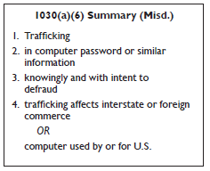
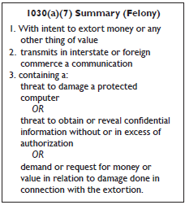

Chapter 1
Computer Fraud and Abuse Act
In the early 1980s law enforcement agencies faced the dawn of the computer age with growing concern about the lack of criminal laws available to fight emerging computer crimes. Although the wire and mail fraud provisions of the federal criminal code were capable of addressing some types of computer related criminal activity, neither of those statutes provided the full range of tools needed to combat these new crimes. See H.R. Rep. No. 98-894, at 6 (1984), reprinted in 1984 U.S.C.C.A.N. 3689, 3692.
In response, Congress included in the Comprehensive Crime Control Act of 1984 provisions to address the unauthorized access and use of computers and computer networks. the legislative history indicates that Congress intended these provisions to provide “a clearer statement of proscribed activity” to “the law enforcement community, those who own and operate computers, as well as those who may be tempted to commit crimes by unauthorized access.” Id. Congress did this by making it a felony to access classified information in a computer without authorization and making it a misdemeanor to access financial records or credit histories stored in a financial institution or to trespass into a government computer. In so doing, Congress opted not to add new provisions regarding computers to existing criminal laws, but rather to address federal computer-related offenses in a single, new statute, 18 U.S.C. § 1030.
Even after enacting section 1030, Congress continued to investigate problems associated with computer crime to determine whether federal criminal laws required further revision. Throughout 1985, both the House and the Senate held hearings on potential computer crime bills, continuing the efforts begun the year before. These hearings culminated in the Computer Fraud and Abuse Act (CFAA), enacted by Congress in 1986, which amended 18 U.S.C. § 1030.
In the CFAA, Congress attempted to strike an “appropriate balance between the Federal Government’s interest in computer crime and the interests and abilities of the States to proscribe and punish such offenses.” See S. Rep. No. 99-432, at 4 (1986), reprinted in 1986 U.S.C.C.A.N. 2479, 2482. Congress addressed federalism concerns in the CFAA by limiting federal jurisdiction to cases with a compelling federal interest—i.e., where computers of the federal government or certain financial institutions are involved or where the crime itself is interstate in nature. See id.
In addition to clarifying a number of the provisions in the original section 1030, the CFAA also criminalized additional computer-related acts. For example, Congress added a provision to penalize the theft of property via computer that occurs as a part of a scheme to defraud. Congress also added a provision to penalize those who intentionally alter, damage, or destroy data belonging to others. This latter provision was designed to cover such activities as the distribution of malicious code and denial of service attacks. Finally, Congress also included in the CFAA a provision criminalizing trafficking in passwords and similar items.
As computer crimes continued to grow in sophistication and as prosecutors gained experience with the CFAA, the CFAA required further amending, which Congress did in 1988, 1989, 1990, 1994, 1996, 2001, 2002, and 2008. The 2008 amendments made the following changes to section 1030:
Aside from the list above, this manual does not explore each of these amendments, but focuses on the law as it exists at the date of the publication of this manual. Additional information on some of the more significant amendments may be found on the CCIPS website, www.cybercrime.gov.
The current version of the CFAA includes seven types of criminal activity, outlined in Table 1 below. Conspiracy to commit and attempts to commit these crimes are also crimes. 18 U.S.C. § 1030(b). However, despite the fact that a conspiracy charge under section 1030(b) does not require proof of an overt act, CCIPS recommends using section 371 to charge conspiracies due to the lack of clarity on penalties. See pages 55-56. Lawfully authorized activities of law enforcement and intelligence agencies are explicitly excluded from coverage of section 1030. 18 U.S.C. § 1030(f).
Table 1. Summary of CFAA Penalties
|
Offense |
Section |
Sentence* |
|
Obtaining National Security Information |
(a)(1) |
10 (20) years |
|
Accessing a Computer and Obtaining Information |
(a)(2) |
1 or 5 (10) |
|
Trespassing in a Government Computer |
(a)(3) |
1 (10) |
|
Accessing a Computer to Defraud & Obtain Value |
(a)(4) |
5 (10) |
|
Intentionally Damaging by Knowing Transmission |
(a)(5)(A) |
1 or 10 (20) |
|
Recklessly Damaging by Intentional Access |
(a)(5)(B) |
1 or 5 (20) |
|
Negligently Causing Damage & Loss by Intentional Access |
(a)(5)(C) |
1 (10) |
|
Trafficking in Passwords |
(a)(6) |
1 (10) |
|
Extortion Involving Computers |
(a)(7) |
5 (10) |
* The maximum prison sentences for second convictions are noted in parentheses.
In some circumstances, the CFAA allows victims who suffer specific types of loss or damage as a result of violations of the Act to bring civil actions against the violators for compensatory damages and injunctive or other equitable relief. 18 U.S.C. § 1030(g). This manual does not address the civil provisions of the statute except as they may pertain to the criminal provisions.
For draft jury instructions, please see Appendix B.
A. Key Definitions
Two terms are common to most prosecutions under section 1030 and are discussed below: “protected computer” and “authorization.” Other terms are discussed with their applicable subsection.
1. Protected Computer
The term “protected computer,” 18 U.S.C. § 1030(e)(2), is a statutory term of art that has nothing to do with the security of the computer. In a nutshell, “protected computer” covers computers used in or affecting interstate or foreign commerce and computers used by the federal government and financial institutions.
Section 1030(e)(2) defines protected computer as:
a computer—
(A) exclusively for the use of a financial institution or the United States Government, or, in the case of a computer not exclusively for such use, used by or for a financial institution or the United States Government and the conduct constituting the offense affects that use by or for the financial institution or the Government; or
(B). which is used in or affecting interstate or foreign commerce or communication . . . .
Note that the computer must be “used in or affecting” not “used by the defendant in”—that is, it is enough that the computer is connected to the Internet; the statute does not require proof that the defendant also used the Internet to access the computer or used the computer to access the Internet.
Several courts have held that using the Internet from a computer is sufficient to meet this element. See, e.g., United States v. Drew, 259 F.R.D. 449, 457 (C.D. Cal. 2009) (“[T]he latter two elements of the section 1030(a)(2)(C) crime [obtaining information from a protected computer] will always be met when an individual using a computer contacts or communicates with an Internet website.”); United States v. Trotter, 478 F.3d 918, 921 (8th Cir. 2007) (“No additional interstate nexus is required when instrumentalities or channels of interstate commerce are regulated.”) (internal citations omitted); Paradigm Alliance, Inc. v. Celeritas Technologies, LLC, 248 F.R.D. 598, 602 (D. Kan. 2008) (“As a practical matter, a computer providing a ‘web-based’ application accessible through the internet would satisfy the ‘interstate communication’ requirement.”).
Prior to 2008, this definition did not explicitly cover computers that were not connected to the Internet and that were not used by the federal government or financial institutions. For example, some state-run utility companies operate computers that are not connected to the Internet for security reasons. Congress remedied this gap in the Identity Theft Enforcement and Restitution Act of 2008 by broadening the definition of “protected computer” to include computers that “affect” interstate or foreign commerce or communications. 18 U.S.C. § 1030(e)(2)(B).
In the USA PATRIOT Act, Congress amended the definition of “protected computer” to make clear that this term includes computers outside of the United States so long as they affect “interstate or foreign commerce or communication of the United States.” 18 U.S.C. § 1030(e)(2)(B) (2001). This change addresses situations where an attacker within the United States attacks a computer system located abroad and situations in which individuals in foreign countries route communications through the United States as they hack from one foreign country to another. Both situations can therefore be violations of section 1030.
2. “Without Authorization” or “Exceeds Authorized Access”
Several of the criminal offenses in the CFAA require that the defendant access a computer “without authorization.” See 18 U.S.C. §§ 1030(a)(3), (a)(5)(B), (a)(5)(C). Others require that the defendant either access a computer “without authorization” or “exceed authorized access.” See 18 U.S.C. §§ 1030(a)(1), (a)(2), (a)(4). The term “without authorization” is not defined by the CFAA. The term “exceeds authorized access” means “to access a computer with authorization and to use such access to obtain or alter information in the computer that the accessor is not entitled so to obtain or alter.” 18 U.S.C. § 1030(e)(6).
The legislative history of the CFAA reflects an expectation that persons who “exceed authorized access” will be insiders (e.g., employees using a victim’s corporate computer network), while persons who access computers “without authorization” will typically be outsiders (e.g., hackers). See S. Rep. No. 99432, at 10 (1986), reprinted in 1986 U.S.C.C.A.N. 2479 (discussing section 1030(a)(5), “insiders, who are authorized to access a computer, face criminal liability only if they intend to cause damage to the computer, not for recklessly or negligently causing damage. By contrast, outside intruders who break into a computer could be punished for any intentional, reckless, or other damage they cause by their trespass.”); S. Rep. No. 104-357, at 11 (1996), available at 1996 WL 492169; United States v. Phillips, 477 F.3d 215, 219 (5th Cir. 2007) (discussing legislative history).
Civil cases interpreting the authorization elements of CFAA offenses have often followed this insider/outsider distinction and concluded that insiders “exceed authorized access,” while outsiders access computers “without authorization.” However, some courts have diverged from this general approach and have found that insiders acted “without authorization” in certain civil cases. The next two subsections discuss the contours of “without authorization” and “exceeding authorized access” in more detail.
Without Authorization
It is relatively easy to define the universe of individuals who lack any authorization to access a computer. When someone from this group of people accesses the computer, the access is necessarily “without authorization” for purposes of the CFAA. See, e.g., United States v. Ivanov, 175 F. Supp. 2d 367 (D. Conn. 2001) (Russian hacker accessed victim company’s computers without authorization). A more difficult question is whether a person with some authorization to access a computer can ever act “without authorization” with respect to that computer. The case law on this issue is muddy, but, as discussed below, there is growing consensus that such “insiders” cannot act “without authorization” unless and until their authorization to access the computer is rescinded.
Prosecutors rarely argue that a defendant accessed a computer “without authorization” when the defendant had some authority to access that computer. However, several civil cases have held that defendants lost their authorization to access computers when they breached a duty of loyalty to the authorizing parties, even if the authorizing parties were unaware of the breach. See, e.g., Int’l Airport Ctrs., LLC v. Citrin,1 440 F.3d 418, 420-21 (7th Cir. 2006); Shurgard Storage Ctrs., Inc. v. Safeguard Self Storage, Inc., 119 F. Supp. 2d 1121, 1125 (W.D. Wash. 2000); Ervin & Smith Advertising and Public Relations, Inc. v. Ervin, 2009 WL 249998 (D. Neb. 2009). Some of these cases further suggest that such a breach can occur when the user decides to access the computer for a purpose that is contrary to the interests of the authorizing party. See, e.g., Citrin, 440 F.3d at 420 (defendant’s authorization to access computer terminated when he resolved to destroy employer’s fles); ViChip Corp. v. Lee, 438 F. Supp. 2d 1087, 1100 (N.D. Cal. 2006) (same); NCMIC Finance Corp.
v. Artino, 638 F. Supp. 2d 1042, 1057 (S.D. Iowa 2009) (“[T]he determinative question is whether Artino breached his duty of loyalty to NCMIC when Artino obtained information from NCMIC’s computers.”).
The Citrin/Shurgard line of cases has been criticized by courts adopting the view that, under the CFAA, an authorized user of a computer cannot access the computer “without authorization” unless and until the authorization is revoked. Most significantly, the Ninth Circuit recently rejected Citrin’s interpretation of “without authorization” and found that, under the plain language of the CFAA, a user’s authorization to access a computer depends on the actions of the authorizing party and not on the user’s duty of loyalty. See LVRC Holdings LLC v. Brekka, 581 F.3d 1127, 1133-34 (9th Cir. 2009) (“It is the employer’s decision to allow or to terminate an employee’s authorization to access a computer that determines whether the employee is with or ‘without authorization.’”). The court also suggested that Citrin’s reading of the CFAA is inconsistent with the rule of lenity, which requires courts to construe any ambiguity in a criminal statute against the government. Id. at 1134-35. The court then held that “a person uses a computer ‘without authorization’ . . . when the person has not received permission to use the computer for any purpose (such as when a hacker accesses someone’s computer without any permission), or when the employer has rescinded permission to access the computer and the defendant uses the computer anyway.” Id. at 1135.
Several district courts have also recently moved away from the Citrin/ Shurgard view that a user can lose authorization to access a computer by breaching a duty of loyalty to the authorizing party. See, e.g., Bell Aerospace Services, Inc. v. U.S. Aero Services, Inc., 690 F. Supp. 2d 1267 (M.D. Ala. 2010); U.S. Bioservices v. Lugo, 595 F. Supp. 2d 1189 (D. Kan. 2009); Losco Foods v. Hall & Shaw Sales, 600 F. Supp. 2d 1045 (E.D. Mo. 2009); Bro-Tech Corp. v. Termax, Inc., 651 F. Supp. 2d 378, 407-08 (E.D. Pa. 2009); Shamrock Foods Co. v. Gast, 535 F. Supp. 2d 962, 964-967 (D. Ariz. 2008); Diamond Power Int’l, Inc. v. Davidson, 540 F. Supp. 2d 1322, 1342 (N.D. Ga. 2007); B&B Microscopes v. Armogida, 532 F. Supp. 2d 744, 758 (W.D. Pa. 2007); Lockheed Martin Corp. v. Speed, 2006 WL 2683058, at *4 (M.D. Fla. 2006). These courts, like the Ninth Circuit, generally hold that an authorized computer user can never access the computer “without authorization” unless and until the authorization is rescinded. See, e.g., Shamrock Foods, 535 F. Supp. 2d at 967 (“[A] violation for accessing ‘without authorization’ occurs only where initial access is not permitted.”).
Based on this recent case law, courts appear increasingly likely to reject the idea that a defendant accessed a computer “without authorization” in insider cases—cases where the defendant had some current authorization to access the computer. Accordingly, prosecutors should think carefully before charging such defendants with violations that require the defendants to access a computer “without authorization” and instead consider bringing charges under those subsections that require proof that the defendant exceeded authorized access.
Exceeding Authorized Access
Several provisions of the CFAA impose criminal liability on a defendant who, among other things, “exceeds authorized access” when accessing a computer. See 18 U.S.C. §§ 1030(a)(1), (a)(2), & (a)(4). The CFAA defines “exceeds authorized access” as “to access a computer with authorization and to use such access to obtain or alter information in the computer that the accessor is not entitled so to obtain or alter.”2 18 U.S.C. § 1030(e)(6). Accordingly, to prove that someone has “exceeded authorized access,” prosecutors should be prepared to present evidence showing (a) how the person’s authority to obtain or alter information on the computer was limited, rather than absolute, and (b) how the person exceeded those limitations in obtaining or altering information.
It is relatively easy to prove that a defendant had only limited authority to access a computer in cases where the defendant’s access was limited by restrictions that were memorialized in writing, such as terms of service, a computer access policy, a website notice, or an employment agreement or similar contract. See, e.g., EF Cultural Travel BV v. Zefer Corp., 318 F.3d 58 (1st Cir. 2003) (website notices); Cont’l Group, Inc. v. KW Prop. Mgmt., LLC, 622 F. Supp. 2d 1357, 1372 (S.D. Fla. 2009) (computer access policies); United States v. Drew,3 259 F.R.D. 449 (C.D. Cal. 2009) (website terms of service); Modis, Inc. v. Bardelli, 531 F. Supp. 2d 314, 319 (D. Conn. 2008) (employment agreement); Hewlett-Packard Co. v. Byd:Sign, Inc., 2007 WL 275476, at *13 (E.D. Tex. 2007) (confidentiality agreement); Am. Online, Inc. v. Nat’l Health Care Discount, Inc., 174 F. Supp. 2d 890, 899 (N.D. Iowa 2001) (email terms of service). In addition, password protection is an implicit (and technological) limit on access for otherwise authorized users who are not given the password. See EF Cultural Travel BV v. Zefer Corp., 318 F.3d 58 (1st Cir. 2003). However, courts have split on the question of whether limits on authorized access can be reasonably inferred from the circumstances in cases where no explicit or implicit restrictions on access existed. Compare EF Cultural Travel BV v. Zefer Corp., 318 F.3d 58 (1st Cir. 2003) (rejecting “reasonable expectations” test for lack of authorization), with United States v. Phillips, 477 F.3d 215, 219 (5th Cir. 2007) (“Courts have . . . typically analyzed the scope of a user’s authorization to access a protected computer on the basis of the expected norms of intended use or the nature of the relationship established between the computer owner and the user.”).4
The most commonly litigated issue about “exceeding authorized access” in reported opinions is whether a particular defendant exceeded authorized access by accessing the computer for an improper purpose. The cases on this issue are difficult to untangle, but this argument generally arises in one of three contexts: (1) the authorizing party has expressly prohibited the defendant from accessing the computer for the improper purpose; (2) the authorizing party has expressly prohibited the defendant from using the authorizing party’s data for the improper purpose but did not condition the defendant’s computer access on compliance with this prohibition; and (3) the authorizing party did not expressly prohibit the defendant from using its data for the improper purpose, but the defendant was acting against the authorizing party’s interests.
The first category of cases is the least controversial. Because the authorizing party explicitly imposed a purpose-based limitation on the defendant’s computer access, a defendant exceeds authorized access when he accesses the computer for an expressly forbidden purpose. See, e.g., United States v. John, 597 F.3d 263, 272 (5th Cir. 2010) (“Access to a computer and data that can be obtained from that access may be exceeded if the purposes for which the access has been given are exceeded.”); Cont’l Group, Inc. v. KW Prop. Mgmt., LLC, 622 F. Supp. 2d 1357, 1372 (S.D. Fla. 2009) (computer access policies stated that computers were provided “for business use” and were “to be used solely for the [authorizing party’s] purposes”); United States v. Salum, 257 Fed. Appx. 225, 227 (11th Cir. 2007) (officers could access NCIC system only for official business of criminal justice agency); Register.com, Inc. v. Verio, Inc., 126 F. Supp. 2d 238, 242-43, 248 (S.D.N.Y. 2000), af’d, 356 F.3d 393 (2d Cir. 2004) (in order to submit query to website, users must agree not to use responsive data for direct marketing activities); United States v. Czubinski, 106 F.3d 1069, 1071 (1st Cir. 1997) (“[IRS] employees may not use any Service computer system for other than official purposes.”).
It may be more difficult to prove that a defendant exceeded authorized access in the second category of cases. In these cases, the authorizing party has expressly prohibited the defendant from using the authorizing party’s data for certain purposes, but it did not condition the defendant’s computer access on compliance with this prohibition. For example, the defendant might have signed a confidentiality agreement in which he agreed not to use the authorizing party’s information for personal gain, but the agreement did not specifically prohibit the defendant from accessing the authorizing party’s computer for that purpose. In essence, the authorizing party has explicitly limited the defendant’s authorization to use information that he might find on the computer, but it has not imposed the same purpose-based limitations on the defendant’s authorization to obtain or alter that information. The CFAA provides that a defendant “exceeds authorized access” when he “obtain[s] or alter[s] information in the computer that [he] is not entitled so to obtain or alter,” 18 U.S.C. § 1030(e)(6), but it does not discuss using the information in an unauthorized way. Because of this statutory language, several courts have concluded that defendants did not “exceed authorized access” when they were permitted to obtain certain information from the computers, but then used that information for a specifically forbidden purpose. See, e.g., Brett Senior & Assocs, P.C. v. Fitzgerald, 2007 WL 2043377, at *4 (E.D. Pa. 2007) (defendant permissibly copied data from computer but then allegedly used data in a way that violated his employment contract); Int’l Ass’n of Machinists and Aerospace Workers v. Werner-Masuda, 390 F. Supp. 2d 479, 498-99 (D. Md. 2005) (defendant was authorized to access data on proprietary website but then violated agreement not to use the data for certain purposes). However, at least one circuit has upheld an “exceeding authorized access” claim in this context. See EF Cultural Travel BV v. Explorica, 274 F.3d 577, 582-83 (1st Cir. 2001) (defendant exceeded authorized access by disclosing computer data in violation of confidentiality agreement).
The third and final category of “improper purposes” cases is arguably the most controversial. In these cases, the defendant accessed the computer within the limits of his authorization but used the computer for a purpose that was contrary to the implicit interests or intent of the authorizing party. The case law is divided on whether these facts are sufficient to establish that the defendant exceeded authorized access. Some courts have concluded that the improper purpose, without more, establishes that the defendant exceeded authorized access. See, e.g., Motorola, Inc. v. Lemko Corp., 609 F. Supp. 2d 760, 767 (N.D. Ill. 2009) (“Allegations that an employee e-mailed and downloaded confidential information for an improper purpose are sufficient to state a claim that the employee exceeded her authorization.”). These cases typically rely on the reasoning set forth in Citrin, 440 F.3d at 420-21, which is discussed in more detail in the previous subsection.
However, a number of recent civil cases have rejected the idea that users can exceed authorized access within the meaning of section 1030(e)(6) when they access information that they are authorized to access, even if their access is motivated by an implicitly improper purpose. See, e.g., LVRC Holdings LLC v. Brekka, 581 F.3d 1127, 1135 n.7 (9th Cir. 2009) (stating in dicta that defendant does not “exceed authorized access” under the CFAA when he breaches a duty of loyalty to authorizing party); Bell Aerospace Services, Inc. v.
U.S. Aero Services, Inc., 690 F. Supp. 2d 1267 (M.D. Ala. 2010); Orbit One Communications, Inc. v. Numerex Corp., 652 F. Supp. 2d 373 (S.D.N.Y. 2010); National City Bank v. Republic Mortgage Home Loans, 2010 WL 959925 (W.D. Wash. 2010); RedMedPar, Inc. v. Allparts Medical, LLC, 683 F. Supp. 2d 605 (M.D. Tenn. 2010); U.S. Bioservices Corp. v. Lugo, 595 F. Supp. 2d 1189, 1192 (D. Kan. 2009) (collecting cases); Jet One Group, Inc. v. Halcyon Jet Holdings, Inc., 2009 WL 2524864, at *5-6 (E.D.N.Y. 2009); Brett Senior & Assocs, P.C. v. Fitzgerald, 2007 WL 2043377, at *4 (E.D. Pa. 2007).
B. Obtaining National Security Information: 18 U.S.C. § 1030(a)(1)
The infrequently-used section 1030(a)(1) punishes the act of obtaining national security information without or in excess of authorization and then willfully providing or attempting to provide the information to an unauthorized recipient, or willfully retaining the information.
Any steps in investigating or indicting a case under section 1030(a)(1) require the prior approval of the National Security Division of the Department of Justice, through the Counterespionage Section. See USAM 9-90.020. Please contact them at (202) 514-1187.
Title 18, United States Code, Section 1030(a)(1) provides:
Whoever—
(1) having knowingly accessed a computer without authorization or exceeding authorized access, and by means of such conduct having obtained information that has been determined by the United States Government pursuant to an Executive order or statute to require protection against unauthorized disclosure for reasons of national defense or foreign relations, or any restricted data, as defined in paragraph y. of section 11 of the Atomic Energy Act of 1954, with reason to believe that such information so obtained could be used to the injury of the United States, or to the advantage of any foreign nation willfully communicates, delivers, transmits, or causes to be communicated, delivered, or transmitted, or attempts to communicate, deliver, transmit or cause to be communicated, delivered, or transmitted the same to any person not entitled to receive it, or willfully retains the same and fails to deliver it to the officer or employee of the United States entitled to receive it . . .
shall be punished as provided in subsection (c) of this section.
1. Knowingly Access a Computer Without or In Excess of Authorization
A violation of this section requires proof that the defendant knowingly accessed a computer without authorization or in excess of authorization. This covers both completely unauthorized individuals who intrude into a computer containing national security information as well as insiders with limited privileges who manage to access portions of a computer or computer network to which they have not been granted access. The scope of authorization will depend upon the facts of each case. However, it is worth noting that computers and computer networks containing national security information will normally be classified and incorporate security safeguards and access controls of their own, which should facilitate proving this element.
Please see page 5 for the discussion of access and authorization.
2. Obtain National Security Information
A violation of this section requires that the information obtained is national security information, meaning information “that has been determined by the United States Government pursuant to an Executive Order or statute to require protection against unauthorized disclosure for reasons of national defense or foreign relations, or any restricted data, as defined in paragraph y. of section 11 of the Atomic Energy Act of 1954.” An example of national security information used in section 1030(a)(1) would be classified information obtained from a Department of Defense computer or restricted data obtained from a Department of Energy computer.
3. Information Could Injure the United States or Benefit a Foreign Nation
A violation of this section requires proof that the defendant had reason to believe that the national security information so obtained could be used to the injury of the United States or to the advantage of any foreign nation. The fact that the national security information is classified or restricted, along with proof of the defendant’s knowledge of that fact, should be sufficient to establish this element of the offense.
4. Willful Communication, Delivery, Transmission, or Retention
A violation of this section requires proof that the defendant willfully communicated, delivered, or transmitted the national security information, attempted to do so, or willfully retained the information instead of delivering it to the intended recipient. This element could be proven through evidence showing that the defendant did any of the following: (a) communicated, delivered, or transmitted national security information, or caused it to be communicated, delivered, or transmitted, to any person not entitled to receive it; (b) attempted to communicate, deliver, or transmit national security information, or attempted to cause it to be communicated, delivered, or transmitted to any person not entitled to receive it; or (c) willfully retained national security information and failed to deliver it to an officer or employee of the United States who is entitled to receive it in the course of their official duties.
5. Penalties
Convictions under this section are felonies punishable by a fine, imprisonment for not more than ten years, or both. 18 U.S.C. § 1030(c)(1)(A). A violation that occurs after another conviction under section 1030 is punishable by a fine, imprisonment for not more than twenty years, or both. 18 U.S.C. § 1030(c)(1)(B).
6. Relation to Other Statutes
Section 1030(a)(1) was originally enacted in 1984 and was substantially amended in 1996. As originally enacted, section 1030(a)(1) provided that anyone who knowingly accessed a computer without authorization or in excess of authorization and obtained classified information “with the intent or reason to believe that such information so obtained is to be used to the injury of the United States, or to the advantage of any foreign nation” was subject to a fine or imprisonment for not more than ten years for a first offense. This scienter element mirrored that of 18 U.S.C. § 794(a), the statute that prohibits gathering or delivering defense information to aid a foreign government. Section 794(a), however, provides for life imprisonment, whereas section 1030(a)(1) is only a ten-year felony. Based on that distinction, Congress amended section 1030(a) (1) in 1996 to track more closely the language of 18 U.S.C. § 793(e), which also provides a maximum penalty of ten years imprisonment for obtaining from any source certain information connected with the national defense and thereafter communicating or attempting to communicate it in an unauthorized manner.
Violations of this subsection are charged quite rarely. The reason for this lack of prosecution may well be the close similarities between sections 1030(a)(1) and 793(e). In situations where both statutes are applicable, prosecutors may tend towards using section 793(e), for which guidance and precedent are more prevalent.
Although sections 793(e) and 1030(a)(1) overlap, the two statutes do not reach exactly the same conduct. Section 1030(a)(1) requires proof that the individual knowingly accessed a computer without or in excess of authority and thereby obtained national security information, and subsequently performed some unauthorized communication or other improper act with that data. In this way, it focuses not only on the possession of, control over, or subsequent transmission of the information (as section 793(e) does), but also focuses on the improper use of a computer to obtain the information itself. Existing espionage laws such as section 793(e) provide solid grounds for the prosecution of individuals who attempt to peddle governmental secrets to foreign governments. However, when a person, without authorization or in excess of authorized access, deliberately accesses a computer, obtains national security information, and seeks to transmit or communicate that information to any prohibited person, prosecutors should consider charging a violation section 1030(a)(1) in addition to considering charging a violation of section 793(e).
One other issue to note is that section 808 of the USA PATRIOT Act added section 1030(a)(1) to the list of crimes in that are considered “Federal Crime[s] of Terrorism” under 18 U.S.C. § 2332b(g)(5)(B). This addition affects prosecutions under section 1030(a)(1) in three ways. First, because offenses listed under section 2332b(g)(5)(B) are now incorporated into 18
U.S.C. § 3286, the statute of limitation for subsection (a)(1) is extended to eight years and is eliminated for offenses that result in, or create a foreseeable risk of, death or serious bodily injury to another person. Second, the term of supervised release after imprisonment for any offense listed under section 2332b(g)(5)(B) that results in, or creates a foreseeable risk of, death or serious bodily injury to another person, can be any term of years or life. 18 U.S.C. § 3583. Formerly, the maximum term of supervised release for any violation of section 1030 was five years. Third, the USA PATRIOT Act added the offenses listed in section 2332b(g)(5)(B) to 18 U.S.C. § 1961(1), making them predicate offenses for prosecutions under the Racketeer Influenced and Corrupt Organizations (RICO) statute. As a result, any “RICO enterprise” (which may include terrorist groups) that violates section 1030(a)(1) (or section 1030(a)(5)(A)) can now be prosecuted under the RICO statute.
C. Accessing a Computer and Obtaining Information: 18 U.S.C. § 1030(a)(2)

The distinct but overlapping crimes established by the three subsections of section 1030(a)(2) punish the unauthorized access of different types of information and computers. Violations of this section are misdemeanors unless aggravating factors exist.
Title 18, United States Code, Section 1030(a)(2) provides:
Whoever—
(2) intentionally accesses a computer without authorization or exceeds authorized access, and thereby obtains—
(A) information contained in a financial record of a financial institution, or of a card issuer as defined in section 1602(n) of title 15, or contained in a file of a consumer reporting agency on a consumer, as such terms are defined in the Fair Credit Reporting Act (15 U.S.C. 1681 et seq.);
(B) information from any department or agency of the United States;
or
(C) information from any protected computer . . .
shall be punished as provided in subsection (c) of this section.
Some intrusions may violate more than one subsection. For example, a computer intrusion into a federal agency’s computer in violation of section 1030(a)(2)(B) might also be covered as information obtained from a “protected computer” under section 1030(a)(2)(C).
Section 1030(a)(2) does not impose a monetary threshold for a misdemeanor violation, in recognition of the fact that some invasions of privacy do not lend themselves to monetary valuation but still warrant federal protection. For example, it may be difficult to measure the harm in dollars where an individual unlawfully downloads sensitive medical information from a hospital’s computer or gathers personal data from the National Crime Information Center. Although there is no monetary threshold for establishing a misdemeanor offense under section 1030(a)(2), the value of the information obtained during an intrusion can elevate the crime to a felony.
1. Intentionally Access a Computer
A violation of this section generally requires that the defendant actually access a computer without or in excess of authorization, rather than merely receive information that was accessed without or in excess of authorization by another. For example, if A obtains information in violation of section 1030(a)(2) and forwards it to B, B has not violated this section, even if B knew the source of the information. See Role Models America, Inc. v. Jones, 305 F. Supp. 2d 564 (D. Md. 2004). Of course, depending on the facts, B might be subject to prosecution for participating in a criminal conspiracy to violate this section or for aiding and abetting a violation.
In 1986, Congress changed the intent standard in this section from “knowingly” to “intentionally” in order to emphasize that “intentional acts of unauthorized access—rather than mistaken, inadvertent, or careless ones— are precisely what the Committee intends to proscribe.” S. Rep. No. 432, 99th Cong., 2d Sess., reprinted in 1986 U.S.C.C.A.N. 2479, 2483. They also designed the “‘intentional’ standard to focus Federal criminal prosecutions on those whose conduct evinces a clear intent to enter, without proper authorization, computer files or data belonging to another.” Id. at 2484 (emphasis added); see also United States v. Willis, 476 F.3d 1121, 1125 n.1 (10th Cir. 2007).
2. Without or In Excess of Authorization
Please see page 5 for the discussion of access and authorization.
3. Obtained Information
The term “obtaining information” is an expansive one that includes merely viewing information without downloading or copying a file. See S. Rep. No. 99-432, at 6; America Online, Inc. v. National Health Care Discount, Inc., 121 F. Supp. 2d 1255, 1275 (N.D. Iowa 2000). Information stored electronically can be obtained not only by actual physical theft, but also by “mere observation of the data.” Id. The “crux of the offense under subsection 1030(a)(2)(C) . . . is the abuse of a computer to obtain the information.” Id.
“Information” includes intangible goods; section 1030(a)(2) therefore covers conduct not necessarily covered by other statutes. In United States v. Brown, 925 F.2d 1301, 1308 (10th Cir. 1991), the Tenth Circuit held that purely intangible intellectual property, such as a computer program, did not constitute goods or services that can be stolen or converted in violation of 18 U.S.C. §§ 2314-15 (transportation and possession of stolen property). 925 F.2d at 1306-07. In the 1996 amendments to section 1030, Congress clarified that section 1030(a)(2) would “ensure that the theft of intangible information by the unauthorized use of a computer is prohibited in the same way theft of physical items are protected.” S. Rep. No. 104-357, at 7, available at 1996 WL 492169.
4. Target
Department or Agency of the United States
Department or agency includes any federal government entity, including the legislature, judiciary, and all parts of the Executive Branch.
“Department” is defined in the CFAA as “the legislative or judicial branch of the Government or one of the [fifteen] executive departments enumerated in section 101 of title 5.” 18 U.S.C. § 1030(e)(7). Although “agency” is not defined in section 1030, the general provisions section of Title 18 defines “agency” as “any department, independent establishment, commission, administration, authority, board or bureau of the United States or any corporation in which the United States has a proprietary interest, unless the context shows that such term was intended to be used in a more limited sense.” 18 U.S.C. § 6.
Under case law, a particular entity is considered an agency when the federal government exercises considerable control over it, or the United States has a proprietary interest in the entity. See Rauscher Pierce Refsnes, Inc. v. FDIC, 789 F.2d 313, 314 (5th Cir. 1986) (“[W]hen the interest of the United States is more than incidental or custodial the corporation meets the definition of agency.” (citing Acron Invest., Inc. v. Federal Sav. & Loan Ins. Corp., 363 F.2d 236, 240 (9th Cir. 1966))); Fed. Land Bank v. Cotton, 410 F. Supp. 169, 171 (N.D. Ga. 1975) (“[C]corporation is not an ‘agency’ unless the government has a substantial proprietary interest in it, or at least exercises considerable control over operation and policy in the corporation.”); Walton v. Howard, 683 F. Supp. 826, 830 (D.D.C. 1987) (“The American National Red Cross . . . was not set up to perform an essential regulatory function, or an essential function in the operation of the national economy, with the federal government maintaining primary control of the corporation. . . . [I]t is not subject to the substantial federal control that is characteristic of a governmental agency.”).
Whether a company working as a private contractor for the government constitutes a “department or agency of the United States” for purposes of prosecution under subsection (a)(2)(B) has not been addressed by any court. However, the argument that private contractors are intended to be covered by this section may be undercut by section 1030(a)(3), which includes language permitting prosecution of trespass into government systems and nongovernment systems, if “such conduct affects that use by or for the Government of the United States.” The existence of this language suggests that if Congress had intended to extend the reach of section 1030(a)(2)(B) beyond computers owned by the federal government, it would have done so using language it used elsewhere in section 1030.
Protected Computer
The term “protected computer” is defined in section 1030(e)(2) and is discussed in the “Key Definitions” discussion on page 4.
5. Penalties
Violations of section 1030(a)(2) are misdemeanors punishable by a fine or a one-year prison term unless aggravating factors apply. 18 U.S.C. § 1030(c)(2)(A). Merely obtaining information worth less than $5,000 is a misdemeanor, unless committed after a conviction for another offense under section 1030, in which case the maximum prison term is 10 years. 18 U.S.C. § 1030(c)(2)(C). A violation or attempted violation of section 1030(a)(2) is a felony if:
18 U.S.C. § 1030(c)(2)(B). If the aggravating factors apply, a violation is punishable by a fine, up to five years’ imprisonment, or both.
Any reasonable method can be used to establish the value of the information obtained. For example, the research, development, and manufacturing costs or the value of the property “in the thieves’ market” can be used to meet the $5,000 valuation. See, e.g., United States v. Stegora, 849 F.2d 291, 292 (8th Cir. 1988). The terms “for purposes of commercial advantage or private financial gain” and “for the purpose of committing any criminal or tortious act” are taken from copyright law (17 U.S.C. § 506(a)) and the wiretap statute (18 U.S.C. § 2511(2)(d)), respectively.
Prosecutors should consider whether the defendant manifested intent to commit a state tort, such as invasion of privacy, at the time the information was obtained. The phrase “laws of the United States or of any State” unquestionably covers state statutory torts. Although defendants may argue that the phrase should be interpreted to refer only to statutory laws and should not cover state “common law” torts, this argument is incorrect. First, the statute’s plain language makes no distinction between statutory and common law. Second, at least one district court has held that the phrase applies to common law torts. United States v. Powers, 2010 WL 1418172 (D. Neb. 2010) (slip copy) (applying section 1030(a)(2) to Nebraska torts of invasion of privacy and intentional infliction of emotional distress). Moreover, the legislative history of section 1030 reveals that Congress intended the phrase to have the same meaning as identical language under the Wiretap Act, and cases construing that language hold the phrase encompasses state common law torts. S. Rep. No. 104-357, at 8 (1996), available at 1996 WL 492169, at *8 (“The terms . . . ‘for the purpose of committing any criminal or tortious act’ . . . are taken from . . . the wiretap statute . . . and are intended to have the same meaning as th[at] statute.”); see Doe v. Smith, 429 F.3d 706 (7th Cir. 2005); Bowens v. Aftermath Entertainment, 254 F. Supp. 2d 629 (E.D. Mich. 2003); Sussman v. American Broadcasting Companies, Inc., 186 F.3d 1200, 1202 (9th Cir. 1999).
Defendants may also argue that, if the statute covered state common law torts then it would federalize and criminalize all common law torts occurring on the Internet and usurp state jurisdiction in common law cases. This argument is also incorrect. First, defendants may only be charged under section 1030(a) (2) when they intentionally accessed a computer without authorization or exceeded authorized access. See United States v. Sablan, 92 F.3d 865, 869 (9th Cir. 1996). Second, the defendant’s access must have been in furtherance of the tortious act. See In re Doubleclick Inc. Privacy Litigation, 154 F. Supp. 2d 497, 519 (S.D.N.Y. 2001) (dismissing claim under section 2511 for lack of evidence of “criminal or tortious” purpose). Nonetheless, because it is possible to contest the applicability of the phrase “laws of the United States or of any State,” prosecutors should carefully consider reliance on minor or obscure common law torts. However, well-recognized common law torts, such as invasion of privacy and intentional infliction of emotional distress, will likely succeed.
6. Historical Notes
Originally, section 1030(a)(2) protected individual privacy by criminalizing unauthorized access to computerized information and credit records relating to customers’ relationships with financial institutions. See S. Rep. No. 99-432, at 6 (1986), reprinted in 1986 U.S.C.C.A.N. 2479, 2483; see also S. Rep. No. 104-357, at 7; America Online, Inc. v. National Health Care Discount, Inc., 121 F. Supp. 2d 1255, 1275 (N.D. Iowa 2000). In 1996, Congress expanded the scope of the section by adding two subsections that also protected information on government computers (§ 1030(a)(2)(B)) and computers used in interstate or foreign communication (§ 1030(a)(2)(C)).
In 1986, Congress changed the scienter requirement from “knowingly” to “intentionally.” See Pub. L. No. 99-474, § 2(a)(1). The first reason for the change was to ensure that only intentional acts of unauthorized access were prohibited, rather than “mistaken, inadvertent, or careless” acts of unauthorized access. S. Rep. No. 99-432, at 5, 1986 U.S.C.C.A.N. at 2483. The second reason for the change was a concern that the “knowingly” standard “might be inappropriate for cases involving computer technology.” Id. The specific concern was that a scienter requirement of “knowingly” might include an individual “who inadvertently ‘stumble[d] into’ someone else’s computer file or computer data,” especially where such individual was authorized to use a particular computer. Id. at 6, 1986 U.S.C.C.A.N. at 2483. The Senate Report offered that “[t]he substitution of an ‘intentional’ standard is designed to focus Federal criminal prosecutions on those whose conduct evinces a clear intent to enter, without proper authorization, computer files or data belonging to another.” Id., 1986 U.S.C.C.A.N. at 2484.
Until 2008, a violation of section 1030(a)(2)(C) required an actual interstate or foreign communication. See 18 U.S.C. § 1030(a)(2)(C) (2007). This limitation precluded prosecution in serious cases where sensitive or proprietary information was stolen from within a single state, as is often the case with “insider” thefts. Trough the Identity Theft Enforcement and Restitution Act, Congress deleted the portion of section 1030(a)(2)(C) that required an interstate or foreign communication. Accordingly, the government may now prosecute those who steal information from a computer without regard to how or where the criminal gained access to the victim computer, so long as that computer constitutes a “protected computer.” In such cases, federal jurisdiction is founded on the definition of “protected computer”—such as a computer owned by the federal government or one used in or affecting interstate commerce—in the same way as other parts of section 1030.
D. Trespassing in a Government Computer: 18 U.S.C. § 1030(a)(3)

Section 1030(a)(3) protects against “trespasses” by outsiders into federal government computers, even when no information is obtained during such trespasses. Congress limited this section’s application to outsiders out of concern that federal employees could become unwittingly subject to prosecution or punished criminally when administrative sanctions were more appropriate. S. Rep. No. 99-432, at 7, reprinted in 1986 U.S.C.C.A.N. 2479, 2485. However, Congress intended interdepartmental trespasses (rather than intradepartmental trespasses) to be punishable under section 1030(a)(3). Id.
Note that section 1030(a)(2) applies to many of the same cases in which section 1030(a)(3) could be charged. In such cases, section 1030(a)(2) may be the preferred charge because a first offense of section 1030(a)(2) may be charged as a felony if certain aggravating factors are present, while a first offense of section 1030(a)(3) is only a misdemeanor.
Title 18, United States Code, Section 1030(a)(3) provides:
Whoever—
(3) intentionally, without authorization to access any nonpublic computer of a department or agency of the United States, accesses such a computer of that department or agency that is exclusively for the use of the Government of the United States or, in the case of a computer not exclusively for such use, is used by or for the Government of the United States and such conduct affects that use by or for the Government of the
United States . . .
shall be punished as provided in subsection (c) of this section.
1. Intentionally Access
The meaning of this term under this section is identical to the meaning under section 1030(a)(2), discussed on page 17.
2. Without Authorization
By requiring that the defendant act without authorization to access the computer, section 1030(a)(3) does not apply to situations in which employees merely exceed authorized access to computers in their own department. S. Rep. No. 99-432, at 7, reprinted in 1986 U.S.C.C.A.N. 2479, 2485. However, Congress apparently intended that section 1030(a)(3) apply “where the offender’s act of trespass is interdepartmental in nature.” Id. at 8. Tus, while federal employees may not be subject to prosecution under section 1030(a) (3) as insiders as to their own agency’s computers, they may be eligible for prosecution in regard to intrusions into other agencies’ computers.
Please see page 5 for the discussion of access without or in excess of authorization.
3. Nonpublic Computer of the United States
“Nonpublic” includes most government computers, but not Internet servers that, by design, offer services to members of the general public. For example, a government agency’s database server is probably “nonpublic,” while the same agency’s web servers are “public.”
The computer must be either owned or controlled by a department or agency of the United States, or at least used “by or for” the government of the United States in some capacity. For example, if the United States has obtained an account on a private company’s server, that server is used “by” the United States even though it is not owned by the United States.
4. Affected United States’ Use of Computer
Demonstrating that the attacked computer is affected by an intrusion should be relatively simple. Almost any network intrusion will affect the government’s use of its computers because any intrusion potentially affects the confidentiality and integrity of the government’s network and often requires substantial measures to assure the integrity of data and the security of the network.
Section 1030(a)(3) “defines as a criminal violation the knowing unauthorized access or use of the system for any unauthorized purpose.” Sawyer v. Department of Air Force, 31 M.S.P.R. 193, 196 (M.S.P.B. 1986). Notably, it is not necessary to demonstrate that the intruder obtained any information from the computer or that the intruder’s trespass damaged the computer. It is not even necessary to show that the intruder’s conduct “adversely” affected the government’s operation of a computer. Under section 1030(a)(3), there are no benign intrusions into government computers.
5. Statutory Penalties
Violations of this section are punishable by a fine and up to one year in prison, 18 U.S.C. § 1030(c)(2)(A), unless the individual has previously been convicted of a section 1030 offense, in which case the maximum punishment increases to ten years in prison, 18 U.S.C. § 1030(c)(2)(c).
6. Relation to Other Statutes
Prosecutors rarely charge section 1030(a)(3) and few cases interpret it, probably because section 1030(a)(2) applies in many of the same cases in which section 1030(a)(3) could be charged. In such cases, section 1030(a) (2) may be the preferred charge because statutory sentencing enhancements may allow section 1030(a)(2) to be charged as a felony on the first offense. A violation of section 1030(a)(3), on the other hand, is only a misdemeanor for a first offense.
. Historical Notes
Congress added the term “nonpublic” in 1996, in recognition of the occasions when a department or agency authorizes access to some portions of its systems by the public, such as websites and interactive services. This addition eliminated the potential defense that intruders were not “without authorization to access any computer” if they had been given authority to access websites and other public networked services offered by the government. By adding the word “nonpublic,” Congress clarified that persons who have no authority to access nonpublic computers of a department or agency may be convicted under section 1030(a)(3), even if they are allowed to access publicly available computers.
During enactment of section 1030(a)(3), the Department of Justice expressed concern that the section could be interpreted to require that the offender’s conduct harm the overall operation of the government, which would be an exceedingly difficult showing for federal prosecutors. Congress responded in 1996 by drafting section 1030(a)(3) so that an offender’s conduct need only affect the use of the government’s operation of the attacked computer rather than affect the government as a whole. See S. Rep. No. 99-432 (1986), reprinted in 1986 U.S.C.C.A.N. 2479.
E. Accessing to Defraud and Obtain Value: 18 U.S.C. § 1030(a)(4)

When deciding how to charge a computer hacking case, prosecutors should consider this subsection as an alternative to subsection 1030(a)(2) when evidence of fraud exists, particularly because offenses under this section are felonies whereas offenses under subsection (a)(2) are misdemeanors (unless certain aggravating factors apply).
Prosecutors may also want to consider charges under the wire fraud statute, 18 U.S.C. § 1343, which requires proof of many elements similar to those needed for section 1030(a)(4) but carries stiffer penalties. For more detail on the comparison, please see page 34. For more discussion about wire fraud, please see page 109.
Title 18, United State Code, Section 1030(a)(4) provides:
Whoever—
(4) knowingly and with intent to defraud, accesses a protected computer without authorization, or exceeds authorized access, and by means of such conduct furthers the intended fraud and obtains anything of value, unless the object of the fraud and the thing obtained consists only of the use of the computer and the value of such use is not more than $5,000 in any 1-year period . . .
shall be punished as provided in subsection (c) of this section.
Although section 1030(a)(4) bears similarities to the federal mail fraud statute (18 U.S.C. § 1341) and wire fraud statute (18 U.S.C. § 1343), section 1030(a)(4) does not have the same broad jurisdictional sweep as the mail and wire fraud statutes. See S. Rep. No. 99-432, at 9 (1986), reprinted in 1986 U.S.C.C.A.N. 2479, 2487 (“It has been suggested that the Committee approach all computer fraud in a manner that directly tracks the existing mail fraud and wire fraud statutes. However, the Committee was concerned that such an approach might permit prosecution under this subsection of acts that do not deserve classification as ‘computer fraud.’”). The specific concern expressed was “that computer usage that is wholly extraneous to an intended fraud might nevertheless be covered by this subsection if the subsection were patterned directly after the current mail fraud and wire fraud laws.” Id. As a result, section 1030(a)(4) includes the requirement, without analogy in the mail and wire fraud statutes, that computer usage be of a protected computer and without or in excess of authorization. See id. (“To be prosecuted under [section 1030(a) (4)], the use of the computer must be more directly linked to the intended fraud. That is, it must be used by the offender without authorization or in excess of his authorization to obtain property of another, which property furthers the intended fraud.”). Of course, most computer crimes involving fraud also make use of a “wire,” making it possible to charge section 1343 as well.
1. Knowingly Access Without or In Excess of Authorization
Please see page 5 for the discussion of access and authorization.
2. With Intent to Defraud
The phrase “knowingly and with intent to defraud” is not defined by section 1030. Very little case law under section 1030 exists as to its meaning, leaving open the question of how broadly a court will interpret the phrase. When Congress added this subsection in 1986, a Senate cosponsor’s comments suggested that Congress intended section 1030(a)(4) to punish attempts to steal valuable data and not to punish mere unauthorized access:
The acts of fraud we are addressing in proposed section 1030(a) (4) are essentially thefts in which someone uses a federal interest computer to wrongly obtain something of value from another. . . . Proposed section 1030(a)(4) is intended to reflect the distinction between the theft of information, a felony, and mere unauthorized access, a misdemeanor.
132 Cong. Rec. 7128, 7129, 99th Cong., 2d Sess. (1986). The Senate Committee Report further emphasizes the fact that section 1030(a)(4) should apply to those who steal information through unauthorized access as part of an illegal scheme:
The Committee remains convinced that there must be a clear distinction between computer theft, punishable as a felony [under this section], and computer trespass, punishable in the first instance as a misdemeanor. The element in the new paragraph (a)(4), requiring a showing of an intent to defraud, is meant to preserve that distinction, as is the requirement that the property wrongfully obtained via computer furthers the intended fraud.
S. Rep. No. 99-432, at 10, reprinted in 1986 U.S.C.C.A.N. 2479, 2488.
Congress also specifically noted that “[t]he scienter requirement for this subsection, ‘knowingly and with intent to defraud,’ is the same as the standard used for 18 U.S.C. [section] 1029 relating to credit card fraud.” See S. Rep. No. 99-432, at 10, reprinted in 1986 U.S.C.C.A.N. 2479, 2488. Interestingly, despite having specifically discussed the mail and wire fraud statutes in the context of section 1030(a)(4), the Committee did not relate the scienter requirement of the term “to defraud” to the use of the same term in the mail and wire fraud statutes, leaving open the question of whether the meaning and proof of “to defraud” is the same for sections 1030(a)(4) and 1029 as it is for the mail and wire fraud statutes. As it is, no reported cases discuss the meaning of “to defraud” under section 1029.
The courts’ treatment of wire fraud and mail fraud, however, is instructive. The Supreme Court has recognized that the mail and wire fraud statutes sweep more broadly than the common law definition of fraud and false pretenses. Durland v. United States, 161 U.S. 306, 313-14 (1896).4 However, the Court also rejected the notion that every “scheme or artifice that in its necessary consequence is one which is calculated to injure another [or] to deprive him of his property wrongfully” constitutes fraud under the mail fraud provision. Fasulo v. United States, 272 U.S. 620, 629 (1926). Fasulo examined the outer limits of the phrase “to defraud,” determining that “broad as are the words ‘to defraud,’ they do not include threat and coercion through fear or force.” Id. at 628. Instead, the Supreme Court placed emphasis on the central role of deception to the concept of fraud— “the words ‘to defraud’ . . . primarily mean to cheat, . . . usually signify the deprivation of something of value by trick, deceit, chicane, or overreaching, and . . . do not extend to theft by violence, or to robbery or burglary.” Id. at 627 (construing Hammerschmidt v. United States, 265 U.S. 182 (1924)).
The Supreme Court held that the mail and wire fraud statutes incorporate the materiality requirement of common-law fraud. See Neder v. United States, 527 U.S. 1, 22-23 (1999) (extending common-law fraud’s requirement of misrepresentation or concealment of material fact to wire fraud and mail fraud statutes). However, the Court recognized that the mail and wire fraud statutes did not incorporate all the elements of common-law fraud, but only those elements not clearly inconsistent with the statutory language. See id. at 24-25 (acknowledging that the common-law requirements of “justifiable reliance” and “damages” are clearly inconsistent with and therefore have no place in federal mail and wire fraud statutes which prohibit the “scheme to defraud” rather than the completed fraud); see also Anza v. Ideal Steel Supply Corp., 547 U.S. 451, 476 (2006).
In the context of the Computer Fraud and Abuse Act, district courts addressing the issue have held that, as in wire and mail fraud cases, there is no need to plead the elements of common law fraud. In Shurgard Storage Centers, Inc. v. Safeguard Self Storage, Inc., 119 F. Supp. 2d 1121, 1123 (W.D. Wash. 2000), a civil case involving section 1030(a)(4), the court favored an expansive interpretation of “intent to defraud.” In denying the defendant’s motion to dismiss, the court held that the word “fraud” as used in section 1030(a)(4) simply means “wrongdoing” and does not require proof of the common law elements of fraud. Id. at 1126 (construing United States v. Czubinski, 106 F.3d 1069, 1078 (1st Cir. 1997)). Tus, the plaintiff stated a sufficient cause of action under section 1030(a)(4) by alleging that the defendant participated in “dishonest methods to obtain the plaintiff’s secret information.” Id. Shurgard does not directly address the Supreme Court’s decisions in the mail or wire fraud contexts, but nevertheless provides some basis for interpreting “fraud” in its broadest sense (i.e., finding “fraud” when there is evidence of “wrongdoing,” as opposed to requiring proof of “trick, deceit, chicane, or overreaching”). See also Hanger Prosthetics & Orthotics, Inc. v. Capstone Orthopedic, Inc., 556 F. Supp. 2d 1122, 1131 (E.D. Cal. 2008) (citing Shurgard); eBay Inc. v. Digital Point Solutions, Inc., 608 F. Supp. 2d 1156, 1164 (N.D. Cal. 2009) (citing Hanger).
However, merely browsing information which does not produce anything of value does not qualify as a “scheme to defraud.” United States v. Czubinski, 106 F.3d 1069 (1st Cir. 1997) (defendant’s unauthorized browsing of confidential taxpayer information in which he did not obtain “anything of value” did not constitute the statutory crime of computer fraud because he did not defraud Internal Revenue Service of its property within meaning of 18 U.S.C. § 1030(a)(4)).
3. Access Furthered the Intended Fraud
The defendant’s illegal access of the protected computer must “further” a fraud. Accessing a computer without authorization—or, more often, exceeding authorized access—can further a fraud in several ways. For example:
The courts have found an increasingly wide range of activities punishable under the mail and wire fraud statutes. See United States v. McNeive, 536 F.2d 1245, 1248-49 (1976) (listing cases covered under mail and wire fraud statutes, including false insurance claims, cheating investors, false odometer schemes, and check kiting schemes). Courts have interpreted section 1341 and section 1343 expansively to cover not only schemes to defraud individuals of money or property, but also schemes to defraud individuals of “intangible” interests and rights. See United States v. Newman, 664 F.2d 12 (2d Cir. 1981) (employer’s interest in confidential information); United States v. Bronston, 658 F.2d 920, 927 (2d Cir. 1981) (client’s right to “undivided loyalty” of attorney); United States v. Von Barta, 635 F.2d 999 (2d Cir. 1980), cert. denied, 450 U.S. 998 (1981) (employer’s right to the honest and faithful service of employees); United States v. Bohonus, 628 F.2d 1167 (9th Cir. 1980), cert. denied, 447 U.S. 928 (1980) (same); United States v. Condolon, 600 F.2d 7 (4th Cir. 1979) (“time, effort and expectations”); United States v. Louderman, 576 F.2d 1383 (9th Cir. 1978), cert. denied, 439 U.S. 896 (1978) (privacy rights); United States v. Bush, 522 F.2d 641 (7th Cir. 1975), cert. denied, 424 U.S. 977 (1976) (citizen’s right to honest services of municipal employee); United States v. States, 488 F.2d 761, 765 (8th Cir. 1973), cert. denied, 417 U.S. 909 (1974) (“certain intangible political rights”); Shushan v. United States, 117 F.2d 110 (5th Cir. 1941), cert. denied, 313 U.S. 574 (1941) (public’s right to a public official’s honest, faithful, and disinterested services). While the Supreme Court held that intangible rights did not receive protection as property rights under the mail fraud statute, see McNally v. United States, 483 U.S. 350 (1987), Congress amended the act to affirm that the statute does protect such rights. See 18 U.S.C. § 1346 (expanding the definition of scheme or artifice to defraud in both the mail and wire fraud statutes to include schemes to deprive individuals of “honest services”).
Some schemes involve not only fraud, but also the theft and alteration of confidential information through unauthorized access of computers. See, e.g., United States v. Scheier, 908 F.2d 645, 646 (10th Cir. 1990), cert. denied, 498 U.S. 1069 (1991) (holding that defendants were in violation of section 1343 for accessing American Airlines’ computer reservation system and altering information therein); United States v. Riggs, 739 F. Supp. 414 (N.D. Ill. 1990) (holding that defendants were in violation of section 1343 when they gained unauthorized access to Bell South’s emergency computer file and schemed to defraud Bell South of property).
The term “by means of such conduct” explicitly links the unauthorized accessing of a protected computer to the furthering of the intended fraud. In creating this link, Congress wished to distinguish those cases of computer trespass where the trespass is used to further the fraud (covered by section 1030(a)(4)) from those cases of fraud that involve a computer but the computer is only tangential to the crime (not covered by section 1030(a)(4)). See S. Rep. No. 99-432, at 9, reprinted in 1986 U.S.C.C.A.N. 2479, 2487.
In order to fall within section 1030(a)(4), “the use of the computer must be more directly linked to the intended fraud.” Id. The section does not apply simply because “the offender signed onto a computer at some point near to the commission or execution of the fraud.” Id. More explicitly, a fraudulent scheme does not constitute computer fraud just because a computer was used “to keep records or to add up [the] potential ‘take’ from the crime.” Id.
This element is easily met if the defendant obtained money, cash, or a good or service with measurable value. Two cases that are more difficult arise (1) when the defendant obtains only the use of a computer, and (2) when the defendant obtains only information.
Use of the computer as a thing of value
The statute recognizes that the use of a computer can constitute a thing of value, but this element is satisfied only if the value of such use is greater than $5,000 in any one-year period.
At the time the statute was written, it was common for owners of top-of-the-line supercomputers to rent the right to run programs on their computers by the hour. In 1986, for example, an hour of time on a Cray X-MP/48 supercomputer reportedly cost $1,000. William F. Eddy, Rejoinder, Statistical Science, Nov. 1986, 451, 453. Conceivably, repeated and sustained use of an expensive modern computer could reach the statutory threshold within one year.
Data or information as a thing of value
Aside from the “computer use” exception, subsection (a)(4) has no minimum dollar amount. Still, the legislative history suggests that obtaining some computer data or information, alone, is not valuable enough to qualify. See S. Rep. 99-432, at 9, reprinted in 1986 U.S.C.C.A.N. 2479, 2487) (“In intentionally trespassing into someone else’s computer files, the offender obtains at the very least information as to how to break into that computer system. If that is all he obtains, the offense should properly be treated as a simple trespass.”).
One case involving the mere viewing of information is United States v. Czubinski, 106 F.3d 1069 (1st Cir. 1997). While Czubinski turned on its specific facts and was decided before Congress amended section 1030(a)(2) to cover obtaining information from a department or agency of the United States, the court’s discussion may be instructive in assessing the parameters of the term “something of value.” Specifically, Czubinski was employed as a Contact Representative in the Boston office of the Taxpayer Services Division of the Internal Revenue Service (IRS). As part of his official duties, Czubinski routinely accessed taxpayer-related information from an IRS computer system using a valid password provided to Contact Representatives. Despite IRS rules plainly forbidding employees from accessing taxpayer files outside the course of their official duties, Czubinski carried out numerous unauthorized searches of taxpayer records on a number of occasions. Based upon these actions, he was indicted and convicted for wire fraud and computer fraud. Id. at 1071-72. On appeal, Czubinski argued that his conviction for violating section 1030(a)(4) should be overturned because he did not obtain “anything of value.” In reviewing the facts surrounding Czubinski’s actions, the First Circuit agreed with Czubinski, stating that “[t]he value of information is relative to one’s needs and objectives; here, the government had to show that the information was valuable to Czubinski in light of a fraudulent scheme. The government failed, however, to prove that Czubinski intended anything more than to satisfy idle curiosity.” Id. at 1078.
Further elaborating on its holding, the court went on to explain that:
[t]he plain language of section 1030(a)(4) emphasizes that more than mere unauthorized use is required: the “thing obtained” may not merely be the unauthorized use. It is the showing of some additional end—to which the unauthorized access is a means—that is lacking here. The evidence did not show that Czubinski’s end was anything more than to satisfy his curiosity by viewing information about friends, acquaintances, and political rivals. No evidence suggests that he printed out, recorded, or used the information he browsed. No rational jury could conclude beyond a reasonable doubt that Czubinski intended to use or disclose that information, and merely viewing information cannot be deemed the same as obtaining something of value for the purposes of this statute.
Id.5
The parameters of what constitutes a “thing of value” were further explored in In re America Online, Inc., 168 F. Supp. 2d 1359 (S.D. Fla. 2001). Specifically, America Online (AOL) was sued by computer users and competitor Internet service providers, alleging that AOL’s software had caused damage to users’ computers and had blocked utilization of competitors’ software by potential users. Id. In moving to dismiss the section 1030(a)(4) allegation, AOL argued that the plaintiffs could not make out an actionable claim because they had failed to plead that AOL had deprived them of “anything of value.” Id. at 1379. In response, the plaintiffs asserted that AOL’s actions had deprived them of their subscribers “custom and trade” and that this interest constituted a “thing of value.” Id.
In distinguishing the case from Czubinski, the America Online court noted that “AOL allegedly has been motivated by more than the mere satisfaction of its curiosity [as was allegedly the sole motivation of the defendant in Czubinski]. AOL’s alleged end is to obtain a monopoly, or at least secure its stronghold, as an ISP.” America Online at 1379-80. Noting that the “typical item of value” in cases brought under the CFAA is usually data, the court observed that “in other areas of the law, customers have been found to be a thing of value.” Id. at 1380. The court therefore found that “damage to an ISP’s goodwill and reputation is actionable under the CFAA” and that “[b]ecause [the plaintiff] has alleged that AOL’s actions have interfered with its relationships with its existing customers and potential subscribers, it has alleged that AOL has obtained something of value within the meaning of 18 U.S.C. § 1030(a)(4).” Id.
5. Statutory Penalties
A violation of section 1030(a)(4) is punishable by a fine and up to five years in prison, unless the individual has been previously convicted of a section 1030 offense, in which case the maximum punishment increases to ten years in prison. 18 U.S.C. § 1030(c)(3).
6. Relation to Other Statutes
In appropriate cases, prosecutors may also want to consider charges under the wire fraud statute, 18 U.S.C. § 1343, which requires proof of many elements similar to those needed for section 1030(a)(4). Please see page 109 for more on section 1343. However, unlike section 1030(a)(4), which is punishable by a maximum of 5 years in prison (assuming the defendant does not have prior section 1030 convictions), wire fraud carries stiffer penalties and is punishable by a maximum of 20 years in prison, or 30 years if the violation affected a financial institution. Compare 18 U.S.C. § 1030(a)(4) with 18 U.S.C. § 1343.
F. Damaging a Computer or Information: 18 U.S.C. § 1030(a)(5)
Criminals can cause damage to computers in a wide variety of ways. For example, an intruder who gains unauthorized access to a computer can send commands that delete files or shuts the computer down. Intruders can initiate a “denial of service attack” that foods the victim computer with useless information and prevents legitimate users from accessing it. A virus or worm can use up all of the available communications bandwidth on a corporate network, making it unavailable to employees. When a virus or worm penetrates a computer’s security, it can delete files, crash the computer, install malicious software, or do other things that impair the computer’s integrity. Prosecutors can use section 1030(a)(5) to charge all of these different kinds of acts.
Title 18, United State Code, Section 1030(a)(5) provides:
Whoever—
(5)(A) knowingly causes the transmission of a program, information, code, or command, and as a result of such conduct, intentionally causes damage without authorization, to a protected computer;
(B) intentionally accesses a protected computer without authorization, and as a result of such conduct, recklessly causes damage; or
(C) intentionally accesses a protected computer without authorization, and as a result of such conduct, causes damage and loss . . .
shall be punished as provided in subsection (c) of this section.
Section 1030(a)(5) criminalizes a variety of actions that cause computer systems to fail to operate as their owners would like them to operate. Damaging a computer can have far-reaching effects. For example, a business may not be able to operate if its computer system stops functioning or it may lose sales if it cannot retrieve the data in a database containing customer information. Similarly, if a computer that operates the phone system used by police and fire fighters stops functioning, people could be injured or die as a result of not receiving emergency services. Such damage to a computer can occur following a successful intrusion, but it may also occur in ways that do not involve the unauthorized access of a computer system.
At their basic level, all three of these subsections are misdemeanors. If the intruder causes sufficient loss or other specified harms, the penalties increase to felonies for subsections (a)(5)(A) and (a)(5)(B). The differences between the conduct criminalized by the three subsections of section 1030(a)(5) vary depending on the mental state of the attackers and their ability to access the victim computer. In basic terms, subsection (5)(A) prohibits anyone from intentionally damaging a computer (without authorization) while subsection (5)(B) prohibits unauthorized users from causing damage recklessly and subsection (5)(C) from causing damage (and loss) negligently.
The latter two subsections require that the defendant “access” the computer without authorization. These criminal prohibitions hold intruders accountable for any damage they cause while intentionally trespassing on a computer, even if they did not intend to cause that damage. See S. Rep. No. 104-357, at 11 (1996), available at 1996 WL 492169 (“Anyone who knowingly invades a system without authority and causes significant loss to the victim should be punished . . . even when the damage caused is not intentional.”).
By contrast, section 1030(a)(5)(A) requires proof only of the knowing transmission of data, a command, or software to intentionally damage a computer without authorization. The government does not need to prove “access.” Because it is possible to damage a computer without “accessing” it, this element is easier to prove (except for the mental state requirement). For example, where an attacker foods an Internet connection with data during a denial of service attack, the damage is intentional even though the attacker never accesses the site.
1. The Transmission or Access Element
Subsection (a)(5)(A): Knowingly causing the transmission of a program, information, code, or command to a protected computer
Section 1030(a)(5)(A) prohibits knowingly causing the transmission of a “program, information, code, or command” and as a result of such conduct, intentionally causing damage to a protected computer. This subsection applies equally to offenders who are authorized to use the victim computer system (an “insider”), to those not authorized to use it (an “outsider”), and to those who have never accessed the system at all.
The term “program, information, code, or command” broadly covers all transmissions that are capable of having an effect on a computer’s operation. This includes software code (such as a worm), software commands (such as an instruction to delete information), and network packets designed to food a network connection or exploit system vulnerabilities.
In the ordinary case where the attacker releases a worm or initiates a denial of service attack, the government should easily meet this element of the crime. On the other hand, this subsection likely does not apply to “physical” acts that shut down a computer, such as flipping a switch to cut of the electrical supply, because they do not involve transmission of a program or command. Other criminal statutes may cover such conduct, however.
An attacker need not directly send the required transmission to the victim computer in order to violate this statute. In one case, a defendant inserted malicious code into a software program he wrote to run on his employer’s computer network. United States v. Sullivan, 40 Fed. Appx. 740 (4th Cir. 2002) (unpublished). After lying dormant for four months, the malicious code activated and downloaded certain other malicious code to several hundred employee handheld computers, making them unusable. Id. at 741. The court held that the defendant knowingly caused transmission of code in violation of the statute. Id. at 743.
In the civil context, courts have taken the idea of transmission of code even further. In International Airport Centers, LLC v. Citrin, 440 F.3d 418, 419-20 (7th Cir. 2006), the Seventh Circuit held that a civil complaint stated a claim when it alleged that the defendant copied a secure-erasure program to his (company-issued) laptop, and even said in dicta that it made no difference if the defendant copied the program over an Internet connection, from an external disk drive, or an internal disk drive. Similarly, in Shaw v. Toshiba America Information Systems, 91 F. Supp. 2d 926, 931 (E.D. Tex. 1999), Toshiba manufactured computers with faulty software that improperly deleted data on diskettes used in their floppy drives, and Toshiba shipped the computers in interstate commerce. In that case, the court found that the shipment of the software by itself constituted transmission for purposes of the statute. Id.6
Subsections (a)(5)(B) or (C): Intentionally accessed a protected computer without authorization
Subsections 1030(a)(5)(B) and (C) require proof that the defendant intentionally accessed a protected computer without authorization. These subsections do not include the phrase “exceeds authorized access.” Compare 18 U.S.C. § 1030(a)(2) & (a)(4) with 18 U.S.C. § 1030(a)(5)(B) & (C). Tus, these subsections do not apply to authorized users of a computer who exceed their authorization.
Please see page 5 for the discussion of access without authorization.
2. The Damage Element
Section 1030(a)(5) prohibits damaging a computer system. 18 U.S.C. § 1030(a)(5)(A)-(C). The statute requires only that the defendant’s conduct “cause” damage in a computer. It is not necessary to prove that the damaged computer was the same computer that the defendant accessed. “Damage” is defined as “any impairment to the integrity or availability of data, a program, a system, or information.” 18 U.S.C. § 1030(e)(8). Although this definition is broad and inclusive, as the use of the word “any” suggests, the definition differs in some ways from the idea of damage to physical property. This definition contains several concepts that allow section 1030(a)(5) to apply to a wide variety of situations.
First, “damage” occurs when an act impairs the “integrity” of data, a program, a system, or information. This part of the definition would apply, for example, where an act causes data or information to be deleted or changed, such as where an intruder accesses a computer system and deletes log files or changes entries in a bank database.
Similarly, “damage” occurs when an intruder changes the way a computer is instructed to operate. For example, installing keylogger software on a home computer can constitute damage. Damage also occurs if an intruder alters the security software of a victim computer so that it fails to detect computer trespassers. In United States v. Middleton, 231 F.3d 1207, 1213-14 (9th Cir. 2000), for example, part of the damage consisted of a user increasing his permissions on a computer system without authorization.
In addition to the impairment of the integrity of information or computer systems, the definition of damage also includes acts that simply make information or computers “unavailable.” Intruders have devised ways to consume all of a computer’s computational resources, effectively making it impossible for authorized users to make use of the computer even though none of the data or software on the victim computer has been modified. Similarly, a “denial of service attack” can food a computer’s Internet connection with junk data, preventing legitimate users from sending or receiving any communications with that computer. See Your Net Dating v. Mitchell, 88 F. Supp. 2d 870, 871 (N.D. Ill. 2000) (granting temporary restraining order where defendant installed code on plaintiff’s web server that diverted certain users trying to access plaintiff’s website to pornography website).
The following examples may help to illustrate this point.
Example 1: Prior to the annual football game between rival schools, an intruder from one high school gains access to the computer system of a rival school and defaces the football team’s website with graffiti announcing that the intruder’s school was going to win the game.
In this example, the intruder has caused damage—the integrity of the information on the website has been impaired because viewers of the site will not see the information that the site’s designers put there.
Example 2: An attacker configures several thousand computers to access the washingtonpost.com website at the same time in a coordinated denial of service attack. As a consequence, the site is jammed, and for approximately 45 minutes, ordinary web surfers find that the site will not load when they type its URL into their browsers.
This example also shows damage as defined by the CFAA. The attacker has, via a code or command, impaired the availability of the data on the website to its normal users.
A computer network intrusion—even a fairly noticeable one—can amount to a kind of trespass that causes no readily discoverable impairment to the computers intruded upon or the data accessed. Even so, such “trespass intrusions” often require that substantial time and attention be devoted to responding to them. In the wake of seemingly minor intrusions, the entire computer system is often audited, for instance, to ensure that viruses, backdoors, or other harmful codes have not been left behind or that data has not been altered or copied. In addition, holes exploited by the intruder are sometimes patched, and the network generally is resecured through a rigorous and time-consuming technical effort.
Example 3: The system administrator of a community college reviews server logs one morning and notes an unauthorized intrusion that occurred through a backdoor at about 3:30 in the morning. It appears to the administrator that the intruder accessed a student database that listed students’ home addresses, phone numbers, and social security numbers. After calling the FBI, she and her staff spend several hours reviewing what occurred, devising patches for the vulnerabilities that the intruder exploited, and otherwise trying to prevent similar intrusions from occurring again. Still, the result of the technical review is that no offending code can be found, and the network appears to function as before. In the two months after the intrusion, staff at the community college report no known alterations or errors in the student database. The cost of the employee time devoted to the review totaled approximately $7,500.
Although the intruder apparently did not make any alterations to the database and the system seems to work as it did before, in a few civil cases courts have held that accessing and copying private data may cause damage to the data under the CFAA.7 See Shurgard Storage Centers, Inc. v. Safeguard Self Storage, Inc., 119 F. Supp. 2d 1121, 1126-27 (W.D. Wash. 2000).
In Shurgard Storage Centers, a self-storage company hired away a key employee of its main competitor. Before the employee left to take his new job, he emailed copies of computer files containing trade secrets to his new employer. In support of a motion for summary judgment as to the section 1030(a)(5) count, the defendant argued that the plaintiff’s computer system had suffered no “damage” as a consequence of a mere copying of files by the disloyal employee. the court, however, found the term “integrity” contextually ambiguous and held that the employee did in fact impair the integrity of the data on the system—even though no data was “physically changed or erased” in the process—when he accessed a computer system without authorization to collect trade secrets. Id.
Courts have made similar rulings in HUB Group, Inc. v. Clancy, 2006 WL 208684 (E.D. Pa. 2006) (downloading employer’s customer database to a thumb drive for use at a future employer created sufficient damage to state claim under the CFAA), and I.M.S. Inquiry Management Systems v. Berkshire Information Systems, 307 F. Supp. 2d 521, 525-26 (S.D.N.Y. 2004) (allegation that the integrity of copyrighted data system was impaired by defendant’s copying was sufficient to plead cause of action under CFAA).
3. Loss
For section 1030(a)(5)(C) violations only, the statute also requires that the defendant’s conduct cause “loss,” which the statute defines as “any reasonable cost to any victim, including the cost of responding to an offense, conducting a damage assessment, and restoring data, program, system, or information to its condition prior to the offense, and any revenue lost, cost incurred, or other consequential damages incurred because of interruption of service.” 18 U.S.C. § 1030(e)(11). See subsection 4, below, for further discussion of “loss.”
4. Harm
In order to prove a felony violation of subsections (a)(5)(A) or (a)(5)(B), the government must prove any of the following harms: (1) at least $5,000 loss during a one-year period; (2) an actual or potential effect on medical care; (3) physical injury to a person; (4) a threat to public health or safety; (5) damage to a computer used in the administration of justice, national defense, or national security; or (6) damage affecting ten or more protected computers during any one-year period. 18 U.S.C. §§ 1030(c)(4)(A)(i), 1030(c)(4)(B)(i).
Under prior iterations of the statute, the government had to prove a defendant’s conduct resulted in one of the first five harms listed above in order to prove a section 1030(a)(5) violation. See 18 U.S.C. § 1030(a)(5)(B) (2007). As a result, the government was unable to prosecute a criminal who damaged a protected computer but failed to cause $5,000 of loss or another of the specified damages. In the Identity Theft Enforcement and Restitution Act of 2008, Congress restructured section 1030(a)(5) and its associated penalty provisions. Under the amended text, criminals who cause damage but who do not satisfy the thresholds previously enumerated in section 1030(a)(5)(B) may still be prosecuted and, upon conviction, sentenced to a maximum one-year term in prison.
In addition, under the 2008 amendment, causing damage to ten or more computers became a sixth circumstance in which a violation of section 1030(a) (5)(A) or (B) constitutes a felony. Prosecutors can utilize this change when charging violations involving botnets and other cases in which criminals install malicious spyware on numerous individual computers.
$5,000 Loss
Of these enumerated harms, prosecutors most commonly charge loss. The statute defines “loss” quite broadly: “any reasonable cost to any victim, including the cost of responding to an offense, conducting a damage assessment, and restoring data, program, system, or information to its condition prior to the offense, and any revenue lost, cost incurred, or other consequential damages incurred because of interruption of service.” 18 U.S.C. § 1030(e)(11). This definition includes, for example, the prorated salary of a system administrator who restores a backup of deleted data, the prorated hourly wage of an employee who checks a database to make sure that no information in it has been modified, the expense of re-creating lost work, the cost of reinstalling system software, and the cost of installing security measures to resecure the computer to avoid further damage from the offender. See United States v. Middleton, 231 F.3d 1207, 1213-14 (9th Cir. 2000) (interpreting § 1030(a)(5) before addition of the definition of damage); see also EF Cultural Travel BV v. Explorica, Inc., 274 F.3d 577, 584 n.17 (1st Cir. 2001) (awarding costs of assessing damage); United States v. Sablan, 92 F.3d 865, 869-70 (9th Cir. 1996) (in calculating “loss” for purposes of earlier version of sentencing guidelines, court properly included standard hourly rate for employees’ time, computer time, and administrative overhead); see also I.M.S. Inquiry Management Systems v. Berkshire Information Systems, 307 F. Supp. 2d 521, 526 (S.D.N.Y. 2004) (awarding costs related to “damage assessment and remedial measures”).
“Loss” also includes such harms as lost advertising revenue or lost sales due to a website outage and the salaries of company employees who are unable to work due to a computer shutdown. See Register.com, Inc. v. Verio, Inc., 126 F. Supp. 2d 238, 252 n.12 (S.D.N.Y. 2000), af’d, 356 F.3d 393 (2d Cir. 2004) (suggesting, under pre-2001 version of § 1030(a)(5), that lost goodwill and lost profits could properly be included in loss calculations where they result from damage to a computer). However, the cost of installing completely new security measures “unrelated to preventing further damage resulting from [the offender’s] conduct,” should not be included in the loss total. See Middleton, 231 F.3d at 1213; see also Turmond v. Compaq Computer Corp., 171 F. Supp. 2d 667, 680-83 (E.D. Tex. 2001) (cost of hiring outside consultant to analyze damage “solely in preparation of litigation” may not be included in loss calculation (based on pre-amendment statutory text)). Prosecutors should think creatively about what sorts of harms in a particular situation meet this definition and work with victims to measure and document all of these losses.
At least one court has held that harm to a company’s reputation and goodwill as a consequence of an intrusion might properly be considered loss for purposes of alleging a violation of section 1030. See America Online, Inc. v. LCGM, Inc., 46 F. Supp. 2d 444, 451 (E.D. Va. 1998). But cf. In re DoubleClick Inc. Privacy Litigation, 154 F. Supp. 2d 497, 525 n.34 (S.D.N.Y. 2001) (stating that America Online is “unpersuasive” and that reputation and goodwill “seem [] far removed from the damage Congress sought to punish and remedy—namely, damage to computer systems and electronic information by
intruders”).
“Loss” calculations may not include costs incurred by victims primarily to aid the government in prosecuting or investigating an offense. U.S.S.G. § 2B1.1, cmt. n. 3(D)(ii); United States v. Schuster, 467 F.3d 614 (7th Cir. 2006). In meeting the $5,000 loss requirement, the government may aggregate all of the losses to all of the victims of a particular intruder that occur within a one-year period, so long as the losses result from a “related course of conduct.” Tus, evidence showing that a particular intruder broke into a computer network five times and caused $1,000 loss each time would meet the statutory requirement, as would $1 loss to 5,000 computers caused by the release of a single virus or worm.8 In addition, section 1030(e)(12) makes clear that for purposes of establishing loss, the victim can be any natural or legal “person,” including corporations, government agencies, or other legal entities.9
The statute does not impose a proximate causation requirement on loss or any other of the special harms listed in section 1030(c)(4)(A)(i). Nonetheless, in Middleton, the Ninth Circuit noted approvingly that the jury in that case was instructed that the losses claimed had to be a “natural and foreseeable result” of the damage. Middleton, 231 F.3d at 1213. This opinion predates the inclusion of a definition of the term “loss” in section 1030. However, given that the statutory definition was modeled on the one used in Middleton, prosecutors may be well-advised, if possible, to demonstrate that the losses used to reach the $5,000 threshold were proximately caused by their defendants’ actions.
Medical Care
The second harm in section 1030(c)(4)(A)(i) relates to the “modification or impairment, or potential modification or impairment, of the medical examination, diagnosis, treatment or care of 1 or more individuals.” 18 U.S.C. §1030(c)(4)(A)(i)(II). This subsection provides strong protection to the computer networks of hospitals, clinics, and other medical facilities because of the importance of those systems and the sensitivity of the data that they contain. This type of harm does not require any showing of financial loss. Indeed, the impairment to computer data caused by an intruder could be minor and easily fable while still giving rise to justified criminal liability. The evidence only has to show that at least one patient’s medical care was at least potentially affected as a consequence of the intrusion.
Example: A system administrator of a hospital resigns her employment. Before she leaves, she inserts a malicious program into the operating system’s code that, when activated one morning, deletes the passwords of all doctors and nurses in the labor and delivery unit. This damage prevents medical personnel from logging on to the computer system, making it impossible to access patients’ electronic medical records, charts, and other data. Another system administrator corrects the problem very quickly, restoring the passwords in ten minutes. No patients were in the labor and delivery unit during the incident.
The conduct in this example should satisfy the “medical” special harm provision. Even though nothing harmful actually occurred as a consequence of the impairment to the system in this case, it requires little imagination to conjure a different outcome where the inability to access the computer system would affect a doctor or nurse’s ability to treat a patient. Provided that a medical professional can testify that a patient’s treatment or care could potentially have been modified or impaired, the government can prove this harm.
Physical Injury
The third specified harm occurs when the damage to a computer causes “physical injury to any person.” 18 U.S.C. § 1030(c)(4)(A)(i)(III). Computer networks control many vital systems in our society, such as air traffic control and 911 emergency telephone service. Disruption of these computers could directly result in physical injury.
One issue to consider is whether the chain of causation between the damaged computer and the injury is too attenuated for the court to hold the intruder criminally responsible. Although the statute does not explicitly require that the injury be proximately caused, courts have much experience in applying this sort of test in other areas of the law and might import the doctrine here. So long as there is a reasonable connection between the damaged computer and the injury, however, charging section 1030(c)(4)(A)(i)(III) is appropriate. For example, suppose that an intruder succeeds in accessing an electric utility’s computer system and shuts down power to a three-square-block area, causing the traffic lights to shut down, and a car accident results. If one of the drivers suffers back and neck injuries, the intruder could properly be convicted under this subsection.
Treats to Public Health or Safety
The fourth specified harm is closely related to physical injury, but only requires a “threat” to public health or safety. See 18 U.S.C. § 1030(c)(4)(A) (i)(IV). Indeed, because the government need not prove actual physical harm to a person, this subsection applies to a wider range of circumstances. Today, computer networks control many of the nation’s critical infrastructures, such as electricity and gas distribution, water purification, nuclear power, and transportation. Damage to the computers that operate these systems or their control and safety mechanisms can create a threat to the safety of many people at once.
Justice, National Defense, or National Security
The specified harm requirement can also be satisfied if the damage affects “a computer system used by or for a government entity in furtherance of the administration of justice, national defense, or national security.” 18 U.S.C. § 1030(c)(4)(A)(i)(V). In 2001, Congress added this subsection because this sort of damage can affect critically important functions—such as one intruder’s attempt to access a court computer without authority and change his sentence—but may not be easily quantified in terms of economic loss under section 1030(c)(4)(A)(i)(I).
Here, “the administration of justice” includes court system computers, but would also appropriately extend to computers owned by state or federal law enforcement agencies, prosecutors, and probation offices. Similarly, computers used “in furtherance of . . . national defense, or national security” would include most computer networks owned by the Department of Defense. The statutory language does not require that the computer be owned or operated by the government—computers owned by a defense contractor, for example, could be “used . . . for” the military in furtherance of national security. At the same time, not every Defense Department computer is used “in furtherance” of the national defense. A computer at the cafeteria in the Pentagon might not qualify, for example.
Damage to ten or more computers
The last specified harm occurs if a defendant causes damage “affecting 10 or more protected computers during any 1-year period.” 18 U.S.C. § 1030(c)(4)(A)(i)(VI). This type of harm would exist, for example, if a criminal installed malicious spyware on a number of computers. Prosecutors can utilize this provision when bringing charges for violations that involve botnets or other circumstances in which the criminal has affected many machines but the nature of the damage makes it difficult or impossible to quantify the harm to each computer or to prove that the total value of the losses exceeds $5,000.
5. Penalties
If an offender accesses a computer without authorization and causes damage and loss with no culpable mental state (i.e., accidentally or negligently), he commits a violation of section 1030(a)(5)(C). This crime is a misdemeanor with a maximum penalty of one year imprisonment. 18 U.S.C. § 1030(c)(4)(G). However, violations of section 1030(a)(5)(C) that follow a previous conviction under section 1030 result in a ten-year maximum penalty. 18 U.S.C. § 1030(c)(4)(D).
Table 2. Penalty Summary for Section 1030(a)(5)
|
Section |
Statutory Penalty |
|
Intentional Damage |
10-year felony if one of six special harms exist; otherwise, |
|
§ 1030(a)(5)(A) |
misdemeanor 20-year felony for subsequent convictions or serious bodily injury Life imprisonment if cause, or attempts to cause, death |
|
Reckless Damage |
5-year felony if one of six special harms exist; otherwise, |
|
§ 1030(a)(5)(B) |
misdemeanor 20-year felony for subsequent convictions |
|
Damage |
Misdemeanor |
|
§ 1030(a)(5)(C) |
10-year felony for subsequent convictions |
Offenders who intentionally or recklessly cause damage, and therefore violate section 1030(a)(5)(A) or (B), are guilty of a misdemeanor and may be sentenced up to one year of imprisonment. The crime becomes a felony, however, if the government can show that the offender caused one of six specific types of harm discussed above. An offender who causes such harm while violating section 1030(a)(5)(A) is subject to a ten-year maximum prison term, a fine, or both, 18 U.S.C. § 1030(c)(4)(B), while an offender who causes such harm while violating section 1030(a)(5)(B) is subject to a five-year maximum prison term, a fine, or both, 18 U.S.C. § 1030(c)(4)(A). Importantly, the statute does not create a mental state with respect to these resulting harms. The government need not prove that the actor intended to cause any particular one of these harms, but merely that the actor’s conduct in fact caused the harm. See United States v. Suplita, Case No. 01cr3650, Order Denying Motion to Dismiss Indictment, at 4 (S.D. Cal. July 23, 2002) (available at www.cybercrime.gov/ suplita_order.pdf).
In any event, if a conviction under either section 1030(a)(5)(A) or (B) follows a conviction for any crime under section 1030, the maximum sentence rises to 20 years’ imprisonment. 18 U.S.C. § 1030(c)(4)(C).
In 2002, Congress added an additional sentencing provision that raised the maximum penalties for certain of these crimes that result in serious bodily injury or death. If the offender intentionally damages a protected computer under section 1030(a)(5)(A) and “attempts to cause or knowingly or recklessly causes serious bodily injury,” the maximum penalty rises to 20 years’ imprisonment. 18 U.S.C. § 1030(c)(4)(E). Where the offender knowingly or recklessly causes or attempts to cause death, the court may impose life in prison. 18 U.S.C. § 1030(c)(4)(F).
6. Relation to Other Statutes
In many cases, intruders cause damage to systems even though their primary intent is to steal information or commit a fraud in violation of sections 1030(a)(2) or (a)(4). For example, intruders commonly try to make it difficult for system administrators to detect them by erasing log files that show that they accessed the computer network. Deleting these files constitutes intentional “damage” for purposes of section 1030(a)(5). Similarly, intruders commonly modify system programs or install new programs to circumvent the computer’s security so that they can access the computer again later. This activity impairs the integrity of the computer and its programs and therefore meets the damage requirement. A charge under section 1030(a)(5) is therefore appropriate in addition to any other charges under section 1030.
Prosecutors should also consider section 1030(a)(5) in cases where an individual breaks into a federal government computer in violation of section 1030(a)(3), a misdemeanor. If the act causes damage, as well as one of the enumerated harms, prosecutors may be able to charge a felony violation of section 1030(a)(5).
When faced with conduct that damages a protected computer, prosecutors should also consider several other statutes that punish the same conduct when particular circumstances are present. For example, where the criminal act causes damage to a computer for communications that is “operated or controlled by the United States” or is “used or intended to be used for military or civil defense functions,” prosecutors should consider charging 18 U.S.C. § 1362, a ten-year felony. Other potentially applicable statutes are discussed in Chapter 3, “Other Network Crime Statutes.”
G. Trafficking in Passwords: 18 U.S.C. § 1030(a)(6)

Section 1030(a)(6) prohibits a person from knowingly and with intent to defraud trafficking in computer passwords and similar information when the trafficking affects interstate or foreign commerce, or when the password may be used to access without authorization a computer used by or for the federal government. First offenses of this section are misdemeanors.
Title 18, United States Code, Section 1030(a)(6) provides:
Whoever—
(6) Knowingly and with intent to defraud traffics (as defined in section 1029) in any password or similar information through which a computer may be accessed without authorization, if—
(A) such trafficking affects interstate or foreign commerce; or
(B) such computer is used by or for the Government of the United States . . .
shall be punished as provided in subsection (c) of this section.
1. Trafficking
The term “traffic” in section 1030(a)(6) is defined by reference to the definition of the same term in 18 U.S.C. § 1029, which means “transfer, or otherwise dispose of, to another, or obtain control of with intent to transfer or dispose of.” 18 U.S.C. § 1029(e)(5). A profit motive is not required. However, the definition excludes mere possession of passwords if the defendant has no intent to transfer or dispose of them. Id. Similarly, personal use of an unauthorized password is not a violation of section 1030(a)(6), although it may be a violation of other provisions under section 1030 that apply to unauthorized access to computers or of section 1029.
2. Computer Password or Similar Information
The term “password” does not mean just a single word or phrase that enables one to access a computer. As a Senate report noted, the statute prohibits trafficking in passwords or similar information:
The Committee recognizes that a “password” may actually be comprised of a set of instructions or directions for gaining access to a computer and intends that the word “password” be construed broadly enough to encompass both single words and longer more detailed explanations on how to access others’ computers.
S. Rep. No. 99-432, at 13 (1986), reprinted in 1986 U.S.C.C.A.N. 2479, 2491. Therefore, prosecutors should apply the term “password” using a broad meaning to include any instructions that safeguard a computer. Pass phrases, codes, usernames, or any other method or combination of methods by which a user is authenticated to a computer system may qualify as a password under section 1030(a)(6).
3. Knowingly and With Intent to Defraud
For a discussion of this phrase in section 1030(a)(4), please see page 27.
4. Object
Trafficking Affects Interstate or Foreign Commerce
For a violation of subsection (A), the trafficking must affect interstate or foreign commerce. The phrase “affects interstate or foreign commerce” is not statutorily defined or interpreted in case law. However, courts have typically construed this requirement expansively when interpreting other statutes that require a certain conduct to affect interstate or foreign commerce. For example, the Ninth Circuit held that a defendant’s illicit possession of out-of-state credit card account numbers is an offense “affecting interstate or foreign commerce” within the meaning of section 1029. United States v. Rushdan, 870 F.2d 1509, 1514 (9th Cir. 1989). In a similar vein, the Sixth Circuit held that a fraudulent credit card transaction affects interstate commerce for purposes of section 1029, inasmuch as banking channels were used for gaining authorization for the charges. United States v. Scartz, 838 F.2d 876, 879 (6th Cir. 1988).
Computer Used By or For the U.S. Government
To prove a violation of subsection (B), the password or similar information must be for accessing without authorization a computer “used by or for the Government of the United States.” This phrase, which is also used in section 1030(a)(3)), is not defined by statute or case law, but its plain meaning should encompass any computer used for official business by a federal government employee or on behalf of the federal government.
5. Penalties
Violations of section 1030(a)(6) are misdemeanors punishable by a fine or a one-year prison term for the first offense. See 18 U.S.C. § 1030(c)(2)(A). If the defendant has a previous conviction under section 1030, the maximum sentence increases to ten years’ imprisonment. See 18 U.S.C. § 1030(c)(2)(C).
6. Relation to Other Statutes
Given the shared statutory definition, section 1030(a)(6) cases often overlap with access device cases under section 1029. Passwords are also access devices under section 1029. See, e.g., United States v. Fernandez, 1993 WL 88197, at *2 (S.D.N.Y. 1993) (holding that the plain meaning of the term “access device” covers “stolen and fraudulently obtained passwords which may be used to access computers to wrongfully obtain things of value”). For more information on section 1029, see Chapter 3, “Other Network Crime Statutes.”
7. Historical Notes
Congress enacted section 1030(a)(6) in 1986 as a “misdemeanor offense aimed at penalizing conduct associated with ‘pirate bulletin boards,’ where passwords are displayed that permit unauthorized access to others’ computers.” S. Rep. No. 99-432, at 13 (1986), reprinted in 1986 U.S.C.C.A.N. 2479, 2490.
H. Threatening to Damage a Computer: 18 U.S.C. § 1030(a)(7)

Section 1030(a)(7), which prohibits extortion threats involving damage to a computer or involving confidential data, is the high-tech variation of old-fashioned extortion. This section applies, for example, to situations in which intruders threaten to penetrate a system and encrypt or delete a database. Other scenarios might involve the threat of distributed denial of service attacks that would shut down the victim’s computers or threats to steal confidential data. Section 1030(a)(7) enables the prosecution of modern-day extortionists who threaten harm unless their demands are met.
Title 18, United States Code, Section 1030(a)(7) provides:
Whoever—
(7) with intent to extort from any person any money or other thing of value, transmits in interstate or foreign commerce any communication containing
any—
(B) threat to obtain information from a protected computer without authorization or in excess of authorization or to impair the confidentiality of information obtained from a protected computer without authorization or by exceeding authorized access; or
(C) demand or request for money or other thing of value in relation to damage to a protected computer, where such damage was caused to facilitate the extortion;
shall be punished as provided in subsection (c) of this section.
1. Intent to Extort Money or Other Ting of Value
In order to prove the “intent to extort” element, it is not necessary to prove that the defendant actually succeeded in obtaining the money or thing of value, or that the defendant actually intended to carry out the threat made. Extortion generally refers to the intent to obtain money or other thing of value with a person’s consent induced by the wrongful use of actual or threatened fear, violence, or force. See, e.g., 18 U.S.C. § 1951.
2. Transmit Communication In Interstate or Foreign Commerce
The extortion threat must be transmitted in interstate or foreign commerce. However, the threat need not be sent electronically. Rather, the statute covers “any interstate or international transmission of threats against computers, computer networks, and their data and programs where the threat is received by mail, a telephone call, electronic mail, or through a computerized messaging service.” S. Rep. No. 104-357, at 12 (1996), available at 1996 WL 492169.
3. Prohibited Communications
Treat to Cause Damage to a Protected Computer
The term “damage” is defined in section 1030(e)(8) and is discussed in the context of section 1030(a)(5) beginning on page 38. Unlawful threats to cause damage include threats to interfere in any way with the normal operation of the computer or system in question, including denying access to authorized users, erasing or corrupting data or programs, or slowing down the operation of the computer or system. See S. Rep. No. 104-357, at 12 (1996), available at 1996 WL 492169. In contrast, unlawful threats to the business that owns the computer system, such as threats to reveal flaws in the network or to reveal that the network has been hacked, are not threats to damage a protected computer under section 1030(a)(7). However, a threat to a business, rather than to a protected computer, might be chargeable as a violation of the Hobbs Act, 18 U.S.C. § 1951.
The term “protected computer” is defined in section 1030(e)(2) and is discussed in the “Key Definitions” on page 4.
Treat to Obtain or Disclose Confidential Information
Section 1030(a)(7)(B) covers two different scenarios. In the first, the criminal threatens to steal confidential information from the victim’s computer systems unless his demands are met. In the second, the criminal has already obtained information by exceeding his authorization or accessing the victim’s computers without authorization and threatens to disclose this previously obtained information unless the victim complies with his demands.
Demand or Request in Relation to Damage to a Protected Computer
In some instances, a criminal will refrain from contacting the victim until after he has done damage to the victim’s computers but then refuse to repair the damage already done unless the victim complies with his demands. For example, the criminal may access the victim’s computer system, encrypt data, and then demand money for the decryption key. See S. Rep. No. 104-357, at 12 (1996), available at 1996 WL 492169. Prosecutors could charge such conduct under section 1030(a)(7)(C).
4. Penalties
A violation of section 1030(a)(7) is punishable by a fine and up to five years in prison. 18 U.S.C. § 1030(c)(3)(A). If the defendant has a previous conviction under section 1030, the maximum sentence increases to 10 years imprisonment. 18 U.S.C. § 1030(c)(3)(B).
5. Relation to Other Statutes
The elements of section 1030(a)(7) generally parallel the elements of a Hobbs Act violation (18 U.S.C. § 1951, interference with commerce by extortion) with some important differences. First, the intent to extort from any person money or other thing of value is the same under section 1030(a)(7) and under section 1951. However, in contrast to section 1951, section 1030(a)(7) does not require proof that the defendant delayed or obstructed commerce. Proving that the threat was transmitted in interstate or foreign commerce is sufficient.
At least one case has recognized the similarities between the two statutes. In United States v. Ivanov, 175 F. Supp. 2d 367 (D. Conn. 2001), the defendant hacked into the victim’s network and obtained root access to the victim’s servers. He then proposed that the victim hire him as a “security expert” to prevent further security breaches, including the deletion of all of the files on the server. Without much discussion, the court determined that the analysis under section 1030(a)(7) was the same as that for the Hobbs Act. See id. at 372.
6. Historical Notes
Congress added section 1030(a)(7) to the CFAA in 1996 to fill perceived gaps in the application of existing anti-extortion statutes:
These cases, although similar in some ways to other cases involving extortionate threats directed against persons or property, can be different from traditional extortion cases in certain respects. It is not entirely clear that existing extortion statutes, which protect against physical injury to persons or property, will cover intangible computerized information.
For example, the “property” protected under existing laws, such as the Hobbs Act, 18 U.S.C. 1951 (interference with commerce by extortion) or 18 U.S.C. 875(d) (interstate communication of a threat to injure the property of another), does not clearly include the operation of a computer, the data or programs stored in a computer or its peripheral equipment, or the decoding keys to encrypted data.
S. Rep. No. 104-357, at 12 (1996), available at 1996 WL 492169.
I. Attempt and Conspiracy: 18 U.S.C. § 1030(b)
Attempts to commit the crimes covered in section 1030 are also criminal acts. Although the maximum sentence is the same as for the completed crime, the Sentencing Guidelines instruct courts to apply the appropriate guideline for the substantive offense and then decrease the offense level by three. See
U.S.S.G. § 2X1.1(a), (b)(1). For more on sentencing issues, please see Chapter
5.
Previous versions of section 1030 did not specifically provide for the prosecution of conspiracies. In 2008, the Identity Theft Enforcement and Restitution Act amended section 1030(b) to create a new conspiracy offense. Title 18, United States Code, Section 1030(b) provides:
Whoever conspires to commit or attempts to commit an offense under subsection (a) of this section shall be punished as provided in subsection (c) of this section.
Like the drug and money laundering conspiracy statutes (21 U.S.C. § 846 and 18 U.S.C. § 1956(h)), section 1030(b) makes no reference to an overt act. Tus, the government need not prove an overt act in order to obtain a conviction for a section 1030 conspiracy. See United States v. Whitfeld, 543 U.S. 209, 214 (2005); United States v. Shabani, 513 U.S. 10, 14 (1994).
Nor must the object of the conspiracy be achievable; conspiracy to hack a honeypot may still violate the CFAA. United States v. Schafer, 586 F.3d 414 (6th Cir. 2009) (basis of a conspiracy charge is the agreement to commit the unlawful act, and not the unlawful act itself; further stating that the illegality of the agreement does not depend upon the achievement of its ends, because objective impossibility is irrelevant for the conspirators to commit the substantive offense).
Despite the existence of section 1030(b), however, prosecutors should consider foregoing charges under this subsection and instead charge defendants under the general conspiracy provision found at 18 U.S.C. § 371. Congress failed to amend the penalty provisions of section 1030(c) to specify what penalties apply to offenders who engage in a conspiracy to violate section 1030. See, e.g., 18 U.S.C. § 1030(c)(1)(A) (specifying a penalty of 10 years imprisonment for “an attempt to commit an offense punishable under this subparagraph” but not mentioning the penalty for conspiracy to commit such an offense). Due to the problems and defense challenges to which this ambiguity may give rise, prosecutors are asked to contact CCIPS if they are considering charging a defendant with conspiracy under section 1030(b).
J. Forfeiture: 18 U.S.C. § 1030(i) & (j)
Prior to 2008, section 1030 did not provide for forfeiture of property used in or derived from computer crime. Congress rectified this gap in the 2008 Identity Theft Enforcement and Restitution Act through the addition of sections 1030(i) & (j).
Title 18, United States Code, Section 1030(i) provides:
(1) The court, in imposing sentence on any person convicted of a violation of this section, or convicted of conspiracy to violate this section, shall order, in addition to any other sentence imposed and irrespective of any provision of State law, that such person forfeit to the United States:
(A) such person’s interest in any personal property that was used or intended to be used to commit or to facilitate the commission of such violation; and
(B) any property, real or personal, constituting or derived from, any proceeds that such person obtained, directly or indirectly, as a result of such violation.
(2) The criminal forfeiture of property under this subsection, any seizure and disposition thereof, and any judicial proceeding in relation thereto, shall be governed by the provisions of section 413 of the Comprehensive Drug Abuse Prevention and Control Act of 1970 (21 U.S.C. 853), except subsection (d) of that section.
Under section 1030(i), personal property is criminally forfeitable if it is either “used or intended to be used to commit or facilitate the commission” of a section 1030 violation or if it “constitute[s] or [is] derived from” the proceeds of such crime. Real property, however, is forfeitable only if it “constitutes or is derived from” the proceeds of a section 1030 offense. 18 U.S.C. § 1030(j)(2). This provision applies only to criminal forfeiture; the statute does not provide for civil forfeiture proceedings.
Case law in the forfeiture context generally has interpreted the word “proceeds” to mean “gross proceeds.” See, e.g., United States v. Bucci, 582 F.3d 108 (1st Cir. 2009); United States v. Valladares, 544 F.3d 1257 (11th Cir. 2008). The Seventh Circuit, however, has reached the opposite conclusion. See, e.g., United States v. Segal, 495 F.3d 826, 839 (7th Cir. 2006) (“[O]ur cases require that proceeds forfeitures be of net, not gross, proceeds and that while restitution is loss based, forfeiture is gain based.”); United States v. Masters, 924 F.2d 1362, 1369-1370 (7th Cir. 1991) (proceeds forfeitable under RICO statute are limited to net proceeds, because they alone represent the defendant’s gain).
Additionally, the proceeds of a section 1030 violation are subject to criminal and civil forfeiture under sections 981 and 982 of Title 18. 18 U.S.C. §§ 981(a)(1)(C), 982(a)(2)(B). Violations of section 1030(a)(1) and most felony violations of section 1030(a)(5)(A) may result in the forfeiture of property involved in the offense. 18 U.S.C. § 2332b(g)(5)(B), 18 U.S.C. § 981(a)(1) (G).
For more information about forfeiture, please contact the Asset Forfeiture & Money Laundering Section at (202) 514-1263.